<!doctype html>
<html lang="en">
<head>
  <meta charset="utf-8">
  <meta name="viewport" content="width=device-width, initial-scale=1">
  <title>arxiv digest — 2026-10-16</title>
  <style>
:root {
  --bg: #ffffff;
  --fg: #1f2328;
  --muted: #59636e;
  --border: #d0d7de;
  --card: #f6f8fa;
  --link: #0969da;
}
body {
  max-width: 980px;
  margin: 0 auto;
  padding: 2rem 1rem 5rem;
  font-family: -apple-system, BlinkMacSystemFont, "Segoe UI", Helvetica, Arial, sans-serif;
  line-height: 1.55;
  color: var(--fg);
  background: var(--bg);
}
a { color: var(--link); }
img { max-width: 100%; height: auto; }
pre, code { background: var(--card); border-radius: 6px; }
pre { padding: 1rem; overflow-x: auto; }
blockquote { border-left: 4px solid var(--border); padding-left: 1rem; color: var(--muted); }
details { margin: 0.6rem 0; }
summary { cursor: pointer; font-weight: 600; }
.paper-figures-scroll {
  display: flex;
  gap: 1rem;
  overflow-x: auto;
  overscroll-behavior-x: contain;
  padding: 0.75rem 0.25rem 1rem;
  margin: 1rem 0 1.25rem;
  border-top: 1px solid var(--border);
  border-bottom: 1px solid var(--border);
  scroll-snap-type: x proximity;
}
.paper-figure-card {
  flex: 0 0 min(260px, 72vw);
  scroll-snap-align: start;
  background: var(--card);
  border: 1px solid var(--border);
  border-radius: 12px;
  padding: 0.55rem;
}
.paper-figure-card img {
  display: block;
  width: 100%;
  max-height: 240px;
  object-fit: contain;
  background: white;
  border-radius: 8px;
}
.paper-figure-caption {
  display: block;
  margin-top: 0.5rem;
  color: var(--muted);
  font-size: 0.85rem;
}
.figure-strip-hint {
  color: var(--muted);
  font-size: 0.9rem;
  margin-bottom: -0.3rem;
}
</style>
  <script>
    window.MathJax = {
      tex: {
        inlineMath: [['$', '$'], ['\\(', '\\)']],
        displayMath: [['$$', '$$'], ['\\[', '\\]']],
        processEscapes: true,
        processEnvironments: true
      },
      options: {
        skipHtmlTags: ['script', 'noscript', 'style', 'textarea', 'pre', 'code'],
        ignoreHtmlClass: 'tex2jax_ignore',
        processHtmlClass: 'tex2jax_process'
      }
    };
  </script>
  <script id="MathJax-script" async
    src="https://cdn.jsdelivr.net/npm/mathjax@3/es5/tex-chtml.js"></script>
</head>
<body>
<header style="background-color: #333; color: white; padding: 15px; margin-bottom: 20px;">
  <h1 style="margin: 0; font-size: 24px;">
    <a href="https://ochelpan.github.io/arXiv_clean/" style="color: white; text-decoration: none;">Main</a>
  </h1>
</header>

<h1>Daily arXiv Report</h1>

<hr>
<p>
<a href="index.html">← Index</a>
 · <a href="papers_04.html">← Previous</a> · <a href="papers_06.html">Next →</a>
</p>
<hr>

<h2>Papers 81–100</h2>
<p><a id="paper-2610.19370"></a></p>
<h3 id="odd-to-even-layer-switch-of-spontaneous-excitonic-state-in-math722math-thin-films"><a href="http://arxiv.org/abs/2610.19370v1">Odd-to-Even-Layer Switch of Spontaneous Excitonic State in $\rm{TiSe_{2}}$ Thin Films</a></h3>
<p><strong>Authors:</strong> Kaili Wang, Zhuowei Liu, Yuyang Mu, Zhujuan Li, Zhenjie Fan, Yu Gui, Xiaodong Qiu, Baigeng Wang, Rui Wang, Yi Zhang, Qi-Kun Xue<br>
<strong>Type:</strong> both · <strong>Category:</strong> strongly correlated electrons · <strong>PDF:</strong> <a href="https://arxiv.org/pdf/2610.19370v1">https://arxiv.org/pdf/2610.19370v1</a><br>
<strong>Analysis basis:</strong> full PDF text, analyzed in chunks
<strong>Topic relevance:</strong> <code>Keldysh / 2PI / non-Gaussian methods</code> <strong>1/5</strong> · <code>analog quantum simulation</code> <strong>1/5</strong> · <code>driven-dissipative phase transition</code> <strong>1/5</strong></p>
<div class="figure-strip-hint">↔ Scroll figures horizontally</div>
<div class="paper-figures-scroll">
<figure class="paper-figure-card">
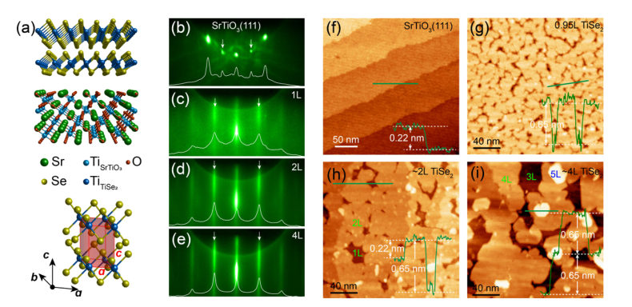
<figcaption class="paper-figure-caption"><b>Fig 1.</b> Fig. 1. (a) Lattice structure and unit-cell of TiSe2 on SrTiO3(111) substrate. (b)-(e) RHEED patterns of (b) SrTiO3(111) substrate, (c) 1L, (d) 2L, (e) 4L TiSe2 films, respectively. The white curves are the IDCs along horizontal direction. The white arrows indicate the 1 × 1 diffraction stripes of the substrate and films. (f)-(i) RT-STM images of (f) SrTiO3(111) substrate, (g) 0.95L, (h) ~2L, (i) ~4L TiSe2 films, respectively. The insetted green curves are the height profiles along the green lines. Scanning parameter: Vbias = 1.0 V, It = 100 pA.</figcaption>
</figure>
<figure class="paper-figure-card">
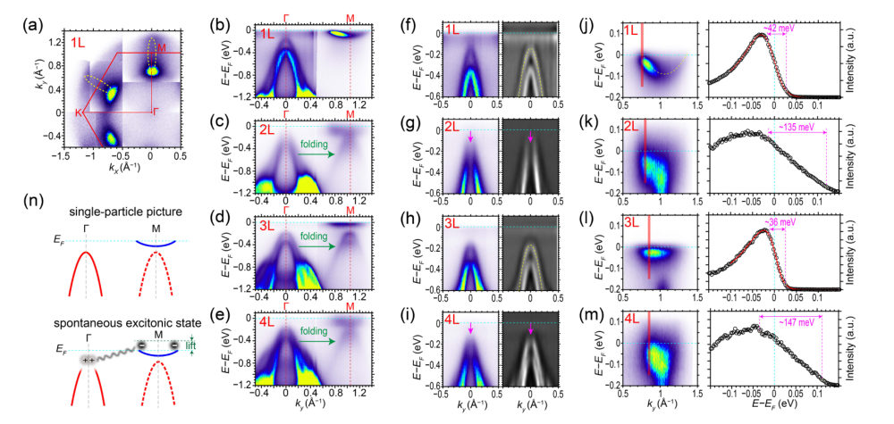
<figcaption class="paper-figure-caption"><b>Fig 2.</b> Fig. 2. (a) Fermi surface mapping of 1L TiSe2 film. The red hexagon indicates the BZ of TiSe2. (b)- (e) ARPES cut spectra of (b) 1L, (c) 2L, (d) 3L and (e) 4L TiSe2 films along the Γ-M direction, respectively. (f)-(i) Zoom-in ARPES spectra (left panels) and the corresponding second-derivates (right panels) focused on the VB at the Γ point for (f) 1L, (g) 2L, (h) 3L and (i) 4L TiSe2 films, respectively. The magenta arrows indicate the notch opening at the top of VB for 2L and 4L samples. (j)-(m) Zoom-in ARPES spectra focused on the CB at the M point for (j) 1L, (k) 2L, (l) 3L and (m) 4L TiSe2 films, respectively. The right panels are the corresponding EDCs along the red lines in left panels....</figcaption>
</figure>
<figure class="paper-figure-card">
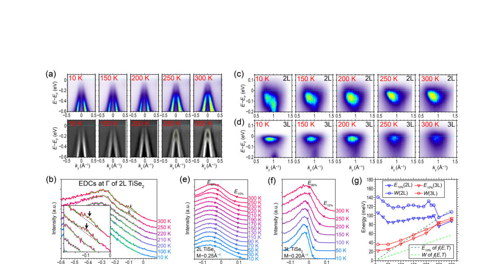
<figcaption class="paper-figure-caption"><b>Fig 3.</b> Fig. 3 (a) VT-ARPES spectra (upper panels) and the corresponding second-derivates (lower panels) focused on the VB at the Г point of a 2L TiSe2 film. (b) EDCs extracted from the VT-ARPES spectra along the Г point of 2L TiSe2. The green curves are the Lorentzian fittings to the raw data. Inset is the zoom-in EDCs. (c)&amp;(d) VT-ARPES spectra focused on the CB at the M point of (c) 2L and (d) 3L TiSe2 films, respectively. (e)&amp;(f) EDCs extracted from the VT-ARPES spectra along the (M– 0.25 Å−1) momentum position of 2L (e), and along the (M– 0.20 Å−1) momentum position of 3L (f) TiSe2 films, respectively. The triangles indicate the energy positions of 90% and 10% of intensity maximum (𝐸𝐸90% and...</figcaption>
</figure>
<figure class="paper-figure-card">
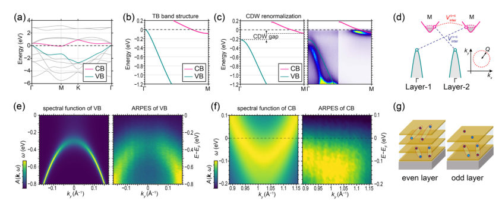
<figcaption class="paper-figure-caption"><b>Fig 4.</b> Fig. 4 (a) Tight-binding results on the band structure of 1L TiSe2 at the single-particle level without considering correlations. (b) The zoom-in low-energy conduction and valence bands taken from (a). (c) The intralayer interaction drives a CDW instability in 1L TiSe2, opening a small gap between the lowest conduction and valence band (left panel), and agreeing well the ARPES spectra (right panel). (d) The schematic plot of the correlation effects essential in the low-energy window for 2L TiSe2. Two interaction channels, 𝑉𝑉inter v−c and 𝑉𝑉inter c−c , are obtained after projection of the interlayer interaction into the lowest two bands. 𝑉𝑉inter v−c drives pairing between virtual electron...</figcaption>
</figure>
<figure class="paper-figure-card">
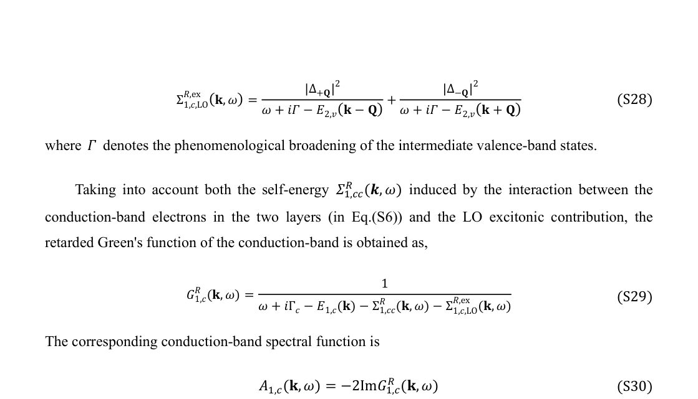
<figcaption class="paper-figure-caption"><b>Fig 5.</b> Fig. 4(e) in the main text is obtained using Eq.(S30) and plot along the 𝑘𝑘𝑥𝑥= 0 momentum cut.</figcaption>
</figure>
</div>

<p><strong>Summary.</strong> This work investigates spontaneous exciton formation in $
m{TiSe_{2}}$ thin films using VT-ARPES, revealing a distinct electronic switch between odd- and even-layer thicknesses. The evidence for excitons comes from spectral notches and broadening in even layers, which is theoretically explained by interlayer coupling within a correlated electron-hole model.</p>
<p><strong>Why it may be interesting.</strong> The study directly addresses excitonic condensation, a topic central to strongly correlated physics, and links it to measurable spectroscopic signatures (notch/broadening) that can be compared to theoretical predictions of excitonic instabilities.</p>
<details>
<summary>Detailed structure</summary>
<p><strong>Main problem.</strong> The primary challenge is the direct observation and manipulation of the spontaneous exciton formation state in $
m{TiSe_{2}}$, a material candidate for high-temperature excitonic condensates.</p>
<p><strong>Main result.</strong> The study provides direct evidence of spontaneous exciton formation in even-layer $
m{TiSe_{2}}$ films, characterized by a VB notch and CB broadening, which is linked to an odd-to-even-layer switch driven by interlayer coupling.</p>
<p><strong>Method.</strong> The research combines experimental measurements using Variable Temperature ARPES (VT-ARPES) with theoretical modeling based on a correlated electron-hole model.</p>
<p><strong>Model / system.</strong> The system is $
m{TiSe_{2}}$ thin films grown on $
m{SrTiO_{3}}(111)$. The theoretical framework involves modeling the excitonic instability using interlayer interband coupling within a tight-binding description.</p>
<p><strong>Key observables.</strong> ARPES spectral features, specifically the VB notch opening in even layers and the CB broadening above the Fermi level, alongside temperature dependence of these features.</p>
<p><strong>Important parameters / regimes.</strong> Layer thickness (odd vs. even), temperature (especially near 250 K), and the strength of interlayer inter-band coupling.</p>
<p><strong>Assumptions / limitations.</strong> The interpretation of spectral weight changes (notch/broadening) as direct evidence of spontaneous exciton formation, and the use of a correlated two-band model for theoretical reproduction.</p>
<p><strong>Figures summary.</strong> Figures show ARPES spectra mapping the band structure for varying layer numbers (1L to 4L), highlighting the spectral changes in the VB and CB that differentiate odd and even layers.</p>
<p><strong>Paper structure.</strong> The paper progresses from experimental observation (ARPES showing layer-dependent spectral changes) to theoretical modeling (using a correlated electron-hole model) to explain the observed odd-to-even-layer switch in excitonic behavior.</p>
</details>
<details>
<summary>Abstract</summary>
<p>$\rm{TiSe_{2}}$ is a candidate of high temperature excitonic condensates with spontaneous exciton formation in addition to its charge density wave (CDW). However, direct observation and manipulation of this electron-hole paring state formation is still lacking. Here, using varying-temperature angle-resolved photoemission spectroscopy (VT-ARPES), we observe a distinct odd-to-even-layer switch of spontaneous exciton state formation with the evident correlated band structure in $\rm{TiSe_{2}}$ thin films. While the odd-layer $\rm{TiSe_{2}}$ films show a sharp band structure in single-particle picture superimposed by CDW renormalization, in the even-layer $\rm{TiSe_{2}}$ films, the full-filling valence band (VB) opens a distinct notch at the top, and the conductive band (CB) shows a significant extra signal extending above Fermi level with spectra broadening. These features indicate that the extra holes (notched VB) and electrons (broadening CB above Fermi level) form spontaneous excitons in even-layer $\rm{TiSe_{2}}$. Based on a correlated electron-hole model extracted from the tight-binding description, we reproduce the characterized band structures with spontaneous exciton formation, where the interlayer inter-band coupling in $\rm{TiSe_{2}}$ plays a key role, which leads to an odd-to-even-layer switch of the excitonic state formation. Our results provide direct evidences of the spontaneous exciton formation, promising an excitonic condensate as versatile platform for realizing Bose-Einstein condensate (BEC) and investigating novel correlated phenomena.</p>
</details>
<p><sub><a href="#top">↑ back to top</a></sub></p>

<p><a id="paper-2610.19416"></a></p>
<h3 id="a-note-on-the-ac-spectrum-of-limit-periodic-jacobi-matrices"><a href="http://arxiv.org/abs/2610.19416v1">A note on the A.C. spectrum of limit-periodic Jacobi matrices</a></h3>
<p><strong>Authors:</strong> Moises Gomez Solis<br>
<strong>Type:</strong> theory · <strong>Category:</strong> other · <strong>PDF:</strong> <a href="https://arxiv.org/pdf/2610.19416v1">https://arxiv.org/pdf/2610.19416v1</a><br>
<strong>Analysis basis:</strong> full PDF text, analyzed in chunks
<strong>Topic relevance:</strong> <code>Frenkel-Kontorova</code> <strong>1/5</strong> · <code>analog quantum simulation</code> <strong>1/5</strong></p>
<div class="figure-strip-hint">↔ Scroll figures horizontally</div>
<div class="paper-figures-scroll">
<figure class="paper-figure-card">

<figcaption class="paper-figure-caption"><b>Fig 1.</b> Low-resolution page preview, page 2</figcaption>
</figure>
<figure class="paper-figure-card">
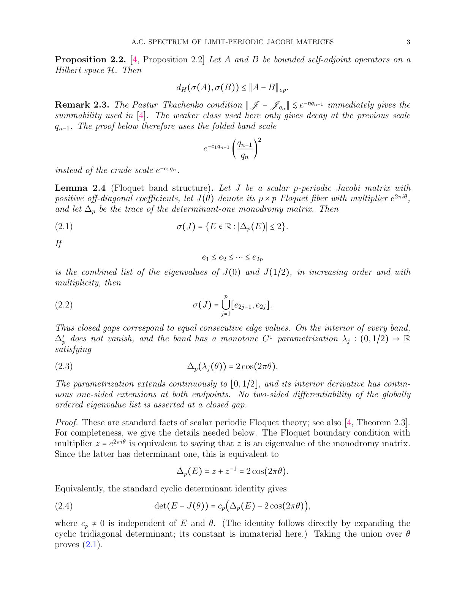
<figcaption class="paper-figure-caption"><b>Fig 2.</b> Low-resolution page preview, page 3</figcaption>
</figure>
<figure class="paper-figure-card">
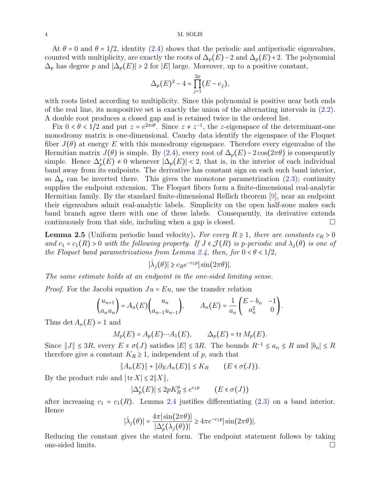
<figcaption class="paper-figure-caption"><b>Fig 3.</b> Low-resolution page preview, page 4</figcaption>
</figure>
<figure class="paper-figure-card">
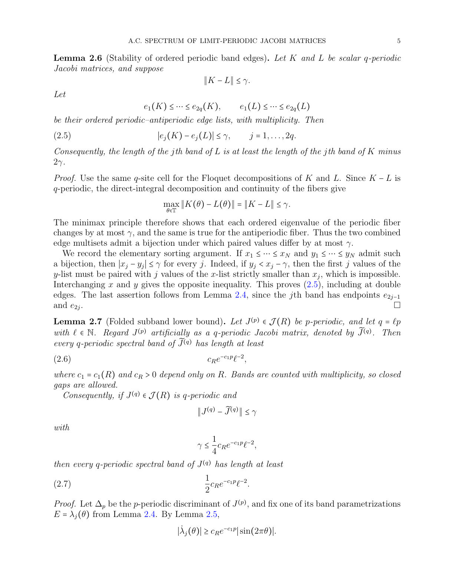
<figcaption class="paper-figure-caption"><b>Fig 4.</b> Low-resolution page preview, page 5</figcaption>
</figure>
<figure class="paper-figure-card">
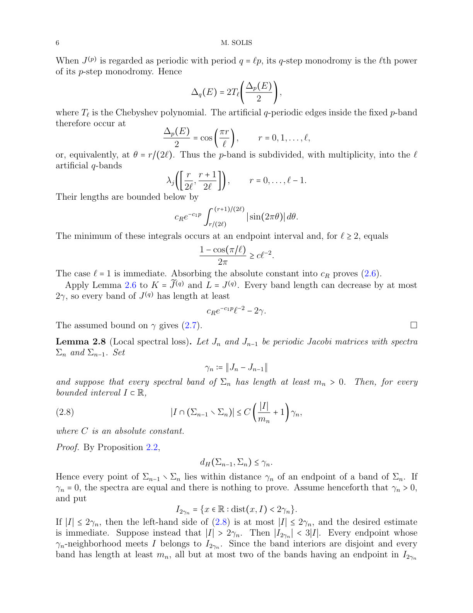
<figcaption class="paper-figure-caption"><b>Fig 5.</b> Low-resolution page preview, page 6</figcaption>
</figure>
</div>

<p><strong>Summary.</strong> This paper rigorously analyzes the spectral properties of limit-periodic Jacobi matrices, which model quantum systems with quasi-periodic potentials. By imposing conditions related to the weak exponential decay of the approximation error, the authors prove that the spectrum must be purely absolutely continuous. This result is significant for understanding the nature of energy spectra in complex, non-periodic quantum systems.</p>
<p><strong>Why it may be interesting.</strong> This work provides rigorous spectral characterization for quasi-periodic Hamiltonians, which are central models in condensed matter physics for studying localization and spectral gaps in disordered or quasi-periodic potentials.</p>
<details>
<summary>Detailed structure</summary>
<p><strong>Main problem.</strong> The paper aims to determine the spectral type, specifically proving it is purely absolutely continuous, for limit-periodic Jacobi matrices.</p>
<p><strong>Main result.</strong> If the matrix belongs to the weak exponential class $EC(\eta)$ with a sufficiently large $\eta$, the Jacobi matrix is proven to have a purely absolutely continuous spectrum.</p>
<p><strong>Method.</strong> The proof combines establishing spectral homogeneity from the weak exponential approximation rate, transferring reflectionlessness from periodic approximants, and applying theorems to rule out singular spectral components.</p>
<p><strong>Model / system.</strong> The system analyzed is the limit-periodic Jacobi matrix, $J$, acting on $\ell^2(\mathbb{Z})$, defined by coefficients $\{a_n\}$ and $\{b_n\}$. These matrices are motivated by connections to quantum dynamics.</p>
<p><strong>Key observables.</strong> Spectral type (purely absolutely continuous), spectral bands, and band lengths.</p>
<p><strong>Important parameters / regimes.</strong> The R-boundedness constant $R$ and the exponential decay rate $\eta$ are critical parameters determining the validity of the result.</p>
<p><strong>Assumptions / limitations.</strong> The analysis requires the R-boundedness assumption ($J \in J(R)$) and the condition that the approximation error decays according to the weak exponential class $EC(\eta)$ with $\eta$ large enough.</p>
<p><strong>Paper structure.</strong> The structure follows establishing spectral homogeneity from the weak exponential class, followed by using a closure theorem to transfer reflectionlessness, and finally applying a theorem (Poltoratski and Remling) to rule out singular spectrum.</p>
</details>
<details>
<summary>Abstract</summary>
<p>We show that limit-periodic Jacobi matrices in the weak exponential class $EC(η)$ have purely absolutely continuous spectral type when $η$ is sufficiently large, depending only on the $R$-boundedness constant. The proof first establishes homogeneity of the spectrum from the weak exponential approximation rate. A closure theorem for reflectionless Jacobi matrices then transfers reflectionlessness from the periodic approximants to the limit, and a theorem of Poltoratski and Remling rules out singular spectrum on a homogeneous set.</p>
</details>
<p><sub><a href="#top">↑ back to top</a></sub></p>

<p><a id="paper-2610.19770"></a></p>
<h3 id="beyond-kitaev-exchange-math743math-driven-magnetism-in-agmath744mathlirhmath745mathomath746math"><a href="http://arxiv.org/abs/2610.19770v1">Beyond Kitaev exchange: $Γ'$-driven magnetism in Ag$_3$LiRh$_2$O$_6$</a></h3>
<p><strong>Authors:</strong> Efrain Insuasti Pazmino, Shi Feng, Ramesh Dhakal, Ioannis Rousochatzakis, Stephen M. Winter, Johannes Knolle, Alexander A. Tsirlin<br>
<strong>Type:</strong> theory · <strong>Category:</strong> strongly correlated electrons · <strong>PDF:</strong> <a href="https://arxiv.org/pdf/2610.19770v1">https://arxiv.org/pdf/2610.19770v1</a><br>
<strong>Analysis basis:</strong> full PDF text, analyzed in chunks
<strong>Topic relevance:</strong> <code>analog quantum simulation</code> <strong>1/5</strong></p>
<div class="figure-strip-hint">↔ Scroll figures horizontally</div>
<div class="paper-figures-scroll">
<figure class="paper-figure-card">
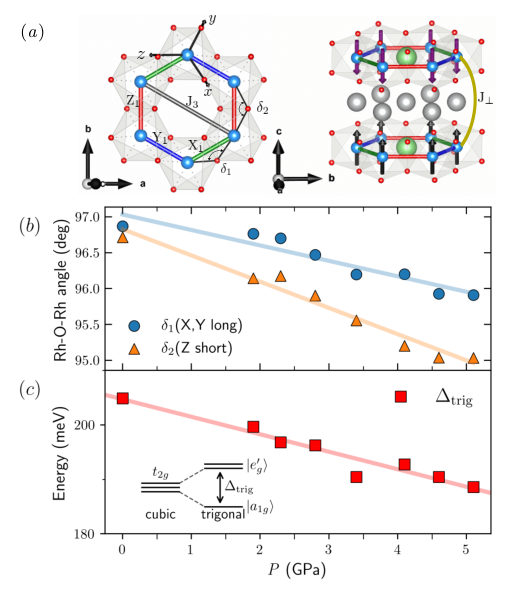
<figcaption class="paper-figure-caption"><b>Fig 1.</b> FIG. 1. (a) Left: honeycomb plane with bond-anisotropic exchange couplings and the relevant bond angles δ1 and δ2. Right: Proposed A-type AFM order along with the inter- layer coupling J⊥. (b) Pressure dependence of the Rh–O–Rh bond angles for the long X, Y bonds (δ1) and the short Z bonds (δ2). (c) Pressure dependence of the trigonal crystal- field splitting shown in the inset. All solid lines are guides to the eye.</figcaption>
</figure>
<figure class="paper-figure-card">
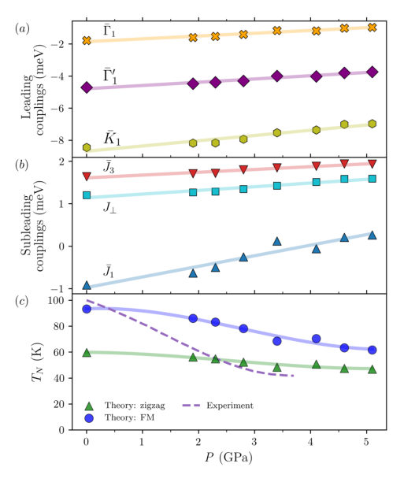
<figcaption class="paper-figure-caption"><b>Fig 2.</b> FIG. 2. Pressure evolution of the exchange couplings ob- tained from cluster exact diagonalization (CED) and mean- field estimate of the Ne´el temperature: (a) Leading couplings ¯K1, ¯Γ′ 1 and ¯Γ1. (b) ¯J3 and J⊥constitute the subleading terms, while ¯J1 is rather small and gets even weaker under pressure. (c) Mean-field calculation of TN. At lower pressures, the A- type AFM order reproduces the experimental values, whereas at higher pressures a better agreement is obtained for the zigzag order.</figcaption>
</figure>
<figure class="paper-figure-card">
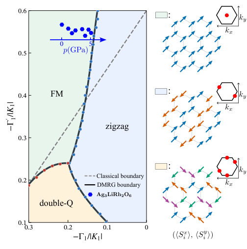
<figcaption class="paper-figure-caption"><b>Fig 3.</b> FIG. 3. Phase diagram of the monolayer K1 −Γ1 −Γ′ 1 −J3 model as a function of the normalized interactions −Γ1/|K1| and −Γ′ 1/|K1|, with J3/|K1| = 0.2. Solid and dashed curves mark the DMRG and classical phase boundaries; red and blue dots on the boundaries denote the phase transitions derived from susceptibilities with respect to Γ′ 1 and Γ1; Blue hexago- nal markers in the FM phase show the CED parameters un- der compression. Real-space spin ordering along with static structure factors on the right column are shown for the ferro- magnetic (FM), zigzag, and the double-Q phases respectively.</figcaption>
</figure>
<figure class="paper-figure-card">
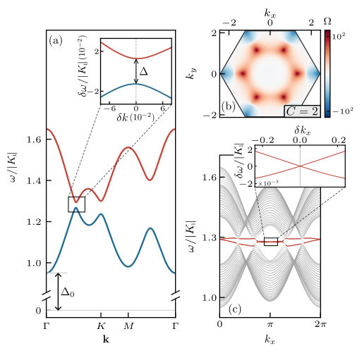
<figcaption class="paper-figure-caption"><b>Fig 4.</b> FIG. 4. Zero-field magnon spectrum for S = 1 2 at (K1, Γ1, Γ′ 1, J3) = (−1, −0.3, −0.4, 0.2) within the FM phase. (a) Bulk magnon bands. Inset: zoom-in of the avoided cross- ing at kx = π. (b) Lower-band Berry curvature Ωin log scale. (c) Band structure on a cylinder with two zigzag-edge modes’ zero-energy crossing (in red) at kx = 0, π; the inset shows the zoomed-in edge mode at kx = π.</figcaption>
</figure>
</div>

<p><strong>Summary.</strong> This theoretical study investigates the magnetism in $ ext{Ag}_3   ext{LiRh}_2 ext{O}_6$, showing that the off-diagonal $\Gamma'_1$ exchange term is crucial for understanding its high magnetic ordering temperature. By combining DFT, DMRG, and LSWT, the authors map out the phase diagram and predict the magnon band structure, opening new avenues for understanding extended Kitaev physics.</p>
<p><strong>Why it may be interesting.</strong> This work is highly relevant as it uses advanced many-body techniques (DMRG, LSWT) to analyze a real material exhibiting complex magnetic behavior, providing a detailed theoretical understanding of how specific lattice distortions enhance previously underestimated exchange terms.</p>
<details>
<summary>Detailed structure</summary>
<p><strong>Main problem.</strong> To explore magnetism beyond the standard Kitaev exchange model by investigating the role of the $\Gamma'$-driven exchange interaction in the honeycomb rhodate $    ext{Ag}_3   ext{LiRh}_2 ext{O}_6$.</p>
<p><strong>Main result.</strong> The combination of the Kitaev exchange ($K_1$) and the off-diagonal $\Gamma'_1$ term successfully explains the material's unusually high magnetic ordering temperature (94 K) and its sensitivity to hydrostatic pressure.</p>
<p><strong>Method.</strong> The study employs a combination of Density-Functional Theory (DFT), Cluster Many-Body calculations, Density-Matrix Renormalization Group (DMRG), and Linear Spin-Wave Theory (LSWT) to analyze the spin Hamiltonian.</p>
<p><strong>Model / system.</strong> The system is the honeycomb rhodate $   ext{Ag}_3   ext{LiRh}_2 ext{O}_6$, modeled by an extended Kitaev Hamiltonian incorporating $K_1$ and $\Gamma'_1$. The analysis compares the ground states of Ferromagnetic (FM) and Zigzag (ZZ) orderings.</p>
<p><strong>Key observables.</strong> Magnetic ordering temperature ($T_N$), magnon band topology, and magnetic Bragg peak positions.</p>
<p><strong>Important parameters / regimes.</strong> Exchange couplings ($ar{K}_1 \simeq -8.4 	ext{ meV}$, $ar{\Gamma}'_1 \simeq -4.7 	ext{ meV}$), hydrostatic pressure, and trigonal distortion magnitude.</p>
<p><strong>Assumptions / limitations.</strong> The analysis relies on approximations such as mean-field theory, the harmonic approximation in LSWT, and the assumption that the $\Gamma'_1$ term is significant.</p>
<p><strong>Figures summary.</strong> Figures illustrate the honeycomb plane with exchange couplings, the pressure dependence of $T_N$ shifting the phase between FM and ZZ order, and simulated neutron diffraction patterns for the A-type AFM state.</p>
<p><strong>Paper structure.</strong> The paper systematically develops the theoretical framework by first identifying the relevant extended Kitaev model, then using DFT/DMRG to map the phase diagram (FM vs. ZZ) based on exchange parameters, and finally using LSWT to predict the magnon spectrum and magnetic structure factors.</p>
</details>
<details>
<summary>Abstract</summary>
<p>In Kitaev magnets, frustration arises from bond-dependent spin anisotropic interactions, which can potentially realize sought-after quantum spin liquid phases. However, material realizations with dominating Kitaev exchange are scarce and the broad parameter space of extended Kitaev models remains largely unexplored experimentally. Here, we use density-functional theory, cluster many-body, spin-wave, and density-matrix renormalization calculations to show that the recently discovered honeycomb rhodate Ag$_3$LiRh$_2$O$_6$ hosts an off-diagonal exchange $Γ_1'$ that is second in magnitude only to the ferromagnetic Kitaev exchange $K_1$. This combination of $K_1$ and $Γ_1'$ explains key experimental observations, an unusually high magnetic ordering temperature of 94 K at ambient pressure and its rapid decrease under hydrostatic pressure as Ag$_3$LiRh$_2$O$_6$ evolves from ferromagnetic toward zigzag order within the honeycomb planes. Our spin-wave calculations further predict an unusual topology of the magnon bands arising from the $Γ_1'$ term in the spin Hamiltonian of the honeycomb layer. We show that the large trigonal splitting of $t_{2g}$ states enhances $Γ_1'$, the hitherto underappreciated term in Kitaev magnets, and opens the way to new interesting regimes of the extended Kitaev model.</p>
</details>
<p><sub><a href="#top">↑ back to top</a></sub></p>

<p><a id="paper-2610.19299"></a></p>
<h3 id="gap-priced-math771math-states-dynamic-math772math-post-selection-and-budget-aware-factory-provisioning"><a href="http://arxiv.org/abs/2610.19299v1">Gap-Priced $|T\rangle$-States: Dynamic $|T\rangle$ Post-Selection and Budget-Aware Factory Provisioning</a></h3>
<p><strong>Authors:</strong> Maxwell Poster, Sayam Sethi, Yuhao Liu, Jonathan Baker, Costin Iancu<br>
<strong>Type:</strong> theory · <strong>Category:</strong> quantum information and computing · <strong>PDF:</strong> <a href="https://arxiv.org/pdf/2610.19299v1">https://arxiv.org/pdf/2610.19299v1</a><br>
<strong>Analysis basis:</strong> full PDF text, analyzed in chunks
<strong>Topic relevance:</strong> <code>quantum measurements</code> <strong>1/5</strong></p>
<div class="figure-strip-hint">↔ Scroll figures horizontally</div>
<div class="paper-figures-scroll">
<figure class="paper-figure-card">
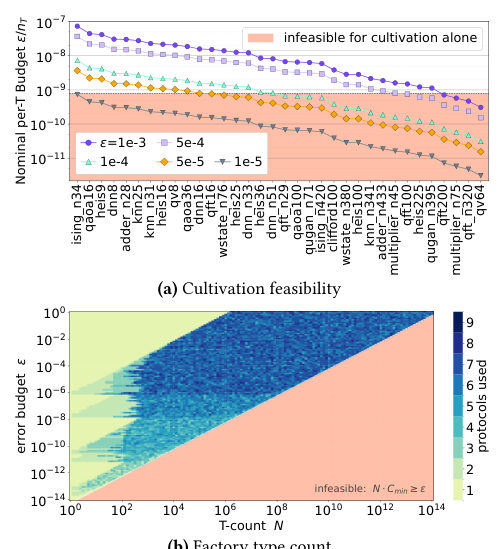
<figcaption class="paper-figure-caption"><b>Fig 1.</b> Figure 1. Magic-state injection requirements versus target total error (|𝑇⟩-state infidelity times |𝑇⟩-state count). (a) Fea- sibility of cultivation alone for several benchmarks. (b) Num- ber of distinct injection methods in the space-optimal config- uration for a given fidelity target and |𝑇⟩-state count, from a constrained space-minimizing optimization over nine proto- cols: cultivation, 15-to-1, 20-to-4, 8-to-CCZ, and cultivation- fed hybrids.</figcaption>
</figure>
<figure class="paper-figure-card">
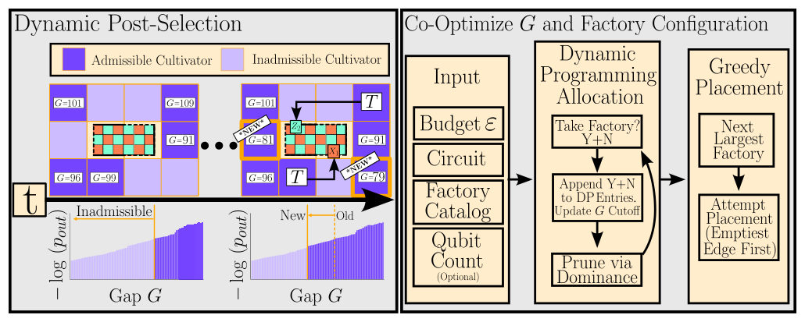
<figcaption class="paper-figure-caption"><b>Fig 2.</b> Figure 2. GP|𝑇⟩-S overview. Left: The gap cutoff is typically statically determined or baked into the cultivation process at compile time. Given a 𝑇-error budget, we propose a dynamic lattice surgery scheduler which adjusts the gap cutoff for cultivators dynamically as the budget is expended. If budget surplus exists, lower gap |𝑇⟩-state that could otherwise not be consumed under a static gap cutoff may be consumed to execute a PPR at the cost of additional 𝑇-error budget, improving execution time. Right: Given the 𝑇-error budget 𝜀, the input circuit, a factory catalog, and optionally physical qubit count, GP|𝑇⟩-S will co-optimize gap cutoff 𝐺and the allocated factory configuration in...</figcaption>
</figure>
<figure class="paper-figure-card">
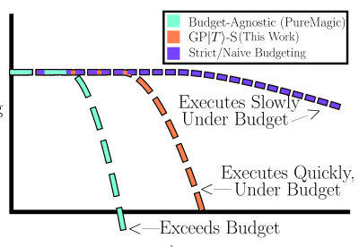
<figcaption class="paper-figure-caption"><b>Fig 3.</b> Figure 3. Where this work sits relative to existing FTQC methods. Current lattice surgery schedulers are budget- agnostic, meaning that while they boast short execution times, they do not perform any resource estimation that would otherwise bottleneck practical, on-hardware execu- tion. At the other end, static allocation of a stringent gap cutoff, or of an unwieldy and large distillation factory, can both execute under budget, but at significant time cost.</figcaption>
</figure>
<figure class="paper-figure-card">
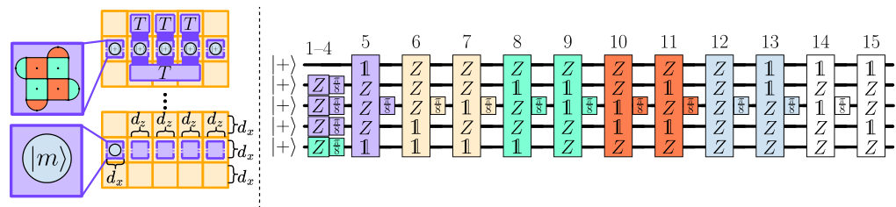
<figcaption class="paper-figure-caption"><b>Fig 4.</b> Figure 4. Left: 15-to-1 distillation factory topology. Five logical surface code qubits occupy the middle row of the 3×5 grid of tiles. The tiles in the first column have distance 𝑑𝑥× 𝑑𝑥, while the remaining tiles have distance 𝑑𝑧× 𝑑𝑥. Faulty 𝑇rotations occur in the routing channels (top row and bottom row) according to the Pauli-product circuit seen on the right. Once this circuit completes, an output magic state |𝑚⟩is produced on the left most column, ready for consumption in a Pauli-product rotation. Right: 15-to-1 distillation Pauli-product circuit [18]. Each product requires a single |𝑇⟩-state to execute, which are typically done via faulty-𝑇rotations, but can also be provided from...</figcaption>
</figure>
<figure class="paper-figure-card">
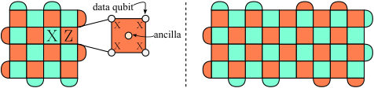
<figcaption class="paper-figure-caption"><b>Fig 5.</b> Figure 5. (a) Left: a single distance-5 surface code patch with 𝑋(red) and 𝑍(blue) stabilizers, each measured through one ancilla qubit; right: an alternative patch shape that exposes joint ports for simultaneous logical measurements.</figcaption>
</figure>
</div>

<p><strong>Summary.</strong> This paper introduces a novel scheduler, GP|T&gt;S, designed to optimize the preparation of crucial |T&gt; magic states for fault-tolerant quantum computing. It dynamically balances cultivation and distillation by treating the total error budget as a shared resource. By co-optimizing these processes, the method significantly outperforms static baselines in terms of speed and resource efficiency.</p>
<p><strong>Why it may be interesting.</strong> While focused on quantum computation, the resource management aspect—co-optimizing multiple competing resource requirements (time vs. space vs. error)—is highly relevant to any field dealing with complex, constrained physical simulations or experimental setups.</p>
<details>
<summary>Detailed structure</summary>
<p><strong>Main problem.</strong> Magic |T&gt; state preparation is the most resource-intensive step in fault-tolerant quantum computation using surface codes, and existing methods fail to optimally balance fidelity, resource usage, and a total error budget.</p>
<p><strong>Main result.</strong> The proposed Gap-Priced |T&gt; States (GP|T&gt;S) scheduler achieves significant speedups (up to 5.5x) and volume reductions (up to 3.4x) across various benchmarks while strictly adhering to a user-defined total T-error budget.</p>
<p><strong>Method.</strong> The authors developed a co-optimization framework using dynamic programming to jointly schedule dynamic cultivation post-selection (based on the complementary gap) and allocate distillation factories across a catalog, all constrained by the total error budget.</p>
<p><strong>Model / system.</strong> The work is situated in the context of Fault-Tolerant Quantum Computation (FTQC) using the surface code, focusing specifically on the preparation of magic |T&gt; states via lattice surgery.</p>
<p><strong>Key observables.</strong> Logical cycle count, space-time volume, and the total T-error budget ($\epsilon$).</p>
<p><strong>Important parameters / regimes.</strong> Total T-error budget ($\epsilon$), cultivation gap cutoff, and factory size/rate.</p>
<p><strong>Assumptions / limitations.</strong> Existing schedulers are budget-agnostic, and static allocation methods cannot optimally balance the trade-off between fidelity and speed.</p>
<p><strong>Figures summary.</strong> Figures illustrate the dynamic adjustment of the gap cutoff and the co-optimization process, comparing the proposed method against cultivation-only and single-factory baselines across multiple benchmarks.</p>
<p><strong>Paper structure.</strong> The paper introduces the core problem, details the GP|T&gt;S methodology (dynamic post-selection and factory allocation), presents the optimization framework using dynamic programming, and validates the approach across sixteen benchmarks under varying error budgets.</p>
</details>
<details>
<summary>Abstract</summary>
<p>Magic $|T\rangle$-state preparation dominates the cost of fault-tolerant quantum computation on surface codes, yet cultivation and distillation are typically provisioned statically, leaving much of the program's error budget unused. We present Gap-Priced $|T\rangle$ States (GP$|T\rangle$-S), a lattice surgery scheduler and factory allocator that co-optimizes both methods under a total $T$-error budget. GP$|T\rangle$-S uses the complementary gap of each cultivated state as a fidelity estimate and dynamically adjusts the cultivation gap cutoff, converting budget slack into speed by giving the scheduler control over the cultivation post-selection. GP$|T\rangle$-S also characterizes distillation factories by size, $|T\rangle$-state production rate, and budget slack, and introduces cultivating factories that embed cultivation within routing channels, achieving fidelities otherwise requiring two-level distillation at a single-level footprint. GP$|T\rangle$-S organizes these characterizations into a factory catalog, and performs distillation factory allocation over this catalog in tandem with the gap cutoff using dynamic-programming to achieve one of i) minimum spacetime volume, ii) minimum execution time, or iii) minimum space overhead, all within a user-provided $T$-error budget. Across sixteen benchmarks under high and low $T$-error budgets of $10^{-3}$ and $10^{-5}$ respectively, GP$|T\rangle$-S consistently outperforms cultivation-only and single-factory baselines without exceeding the budget, achieving a 5.5$\times$ geometric mean speedup in logical cycle count and a 3.4$\times$ geometric mean reduction in space-time volume.</p>
</details>
<p><sub><a href="#top">↑ back to top</a></sub></p>

<p><a id="paper-2610.19936"></a></p>
<h3 id="improved-quantum-algorithms-for-renyi-entropies-estimation"><a href="http://arxiv.org/abs/2610.19936v1">Improved Quantum Algorithms for Rényi Entropies Estimation</a></h3>
<p><strong>Authors:</strong> Zongxing Xiong, Chengshen Gao, Lvzhou Li<br>
<strong>Type:</strong> theory · <strong>Category:</strong> quantum information and computing · <strong>PDF:</strong> <a href="https://arxiv.org/pdf/2610.19936v1">https://arxiv.org/pdf/2610.19936v1</a><br>
<strong>Analysis basis:</strong> full PDF text, analyzed in chunks
<strong>Topic relevance:</strong> <code>quantum measurements</code> <strong>1/5</strong></p>
<div class="figure-strip-hint">↔ Scroll figures horizontally</div>
<div class="paper-figures-scroll">
<figure class="paper-figure-card">
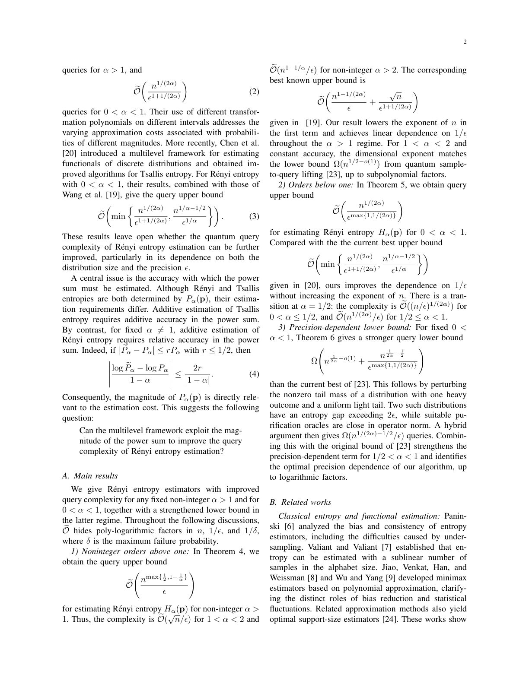
<figcaption class="paper-figure-caption"><b>Fig 1.</b> Low-resolution page preview, page 2</figcaption>
</figure>
<figure class="paper-figure-card">
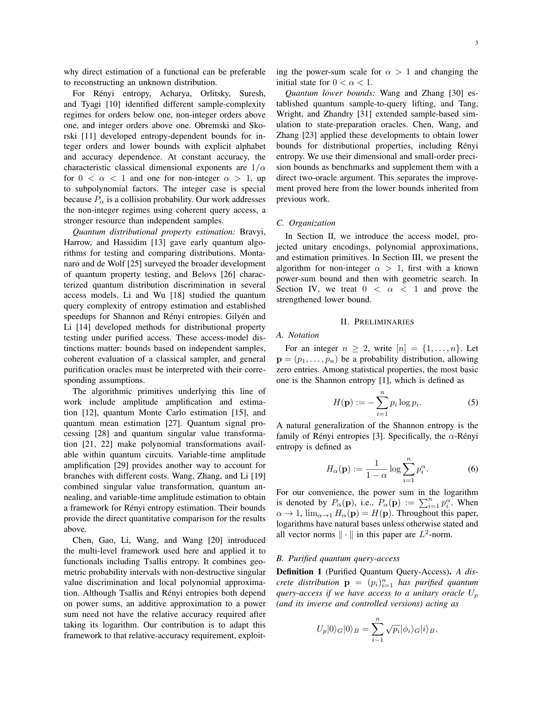
<figcaption class="paper-figure-caption"><b>Fig 2.</b> Low-resolution page preview, page 3</figcaption>
</figure>
<figure class="paper-figure-card">
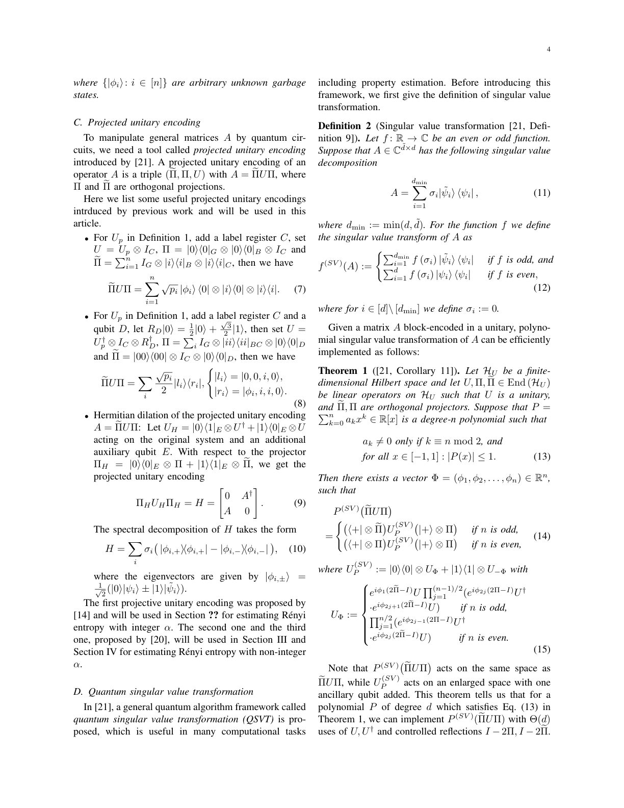
<figcaption class="paper-figure-caption"><b>Fig 3.</b> Low-resolution page preview, page 4</figcaption>
</figure>
<figure class="paper-figure-card">
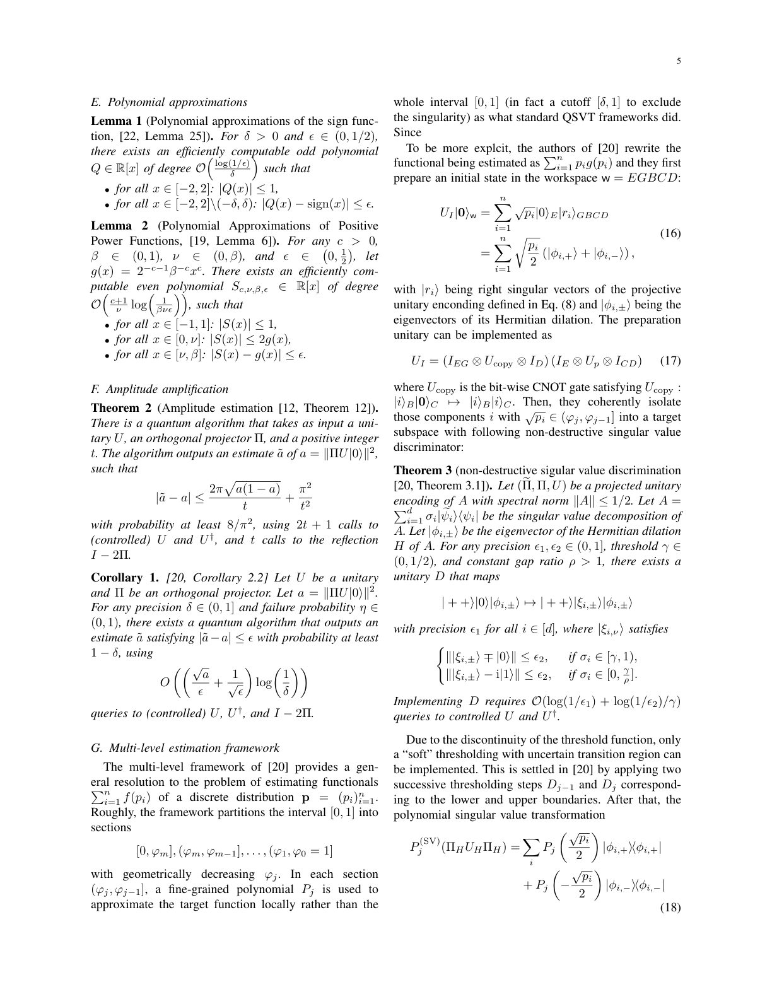
<figcaption class="paper-figure-caption"><b>Fig 4.</b> Low-resolution page preview, page 5</figcaption>
</figure>
<figure class="paper-figure-card">
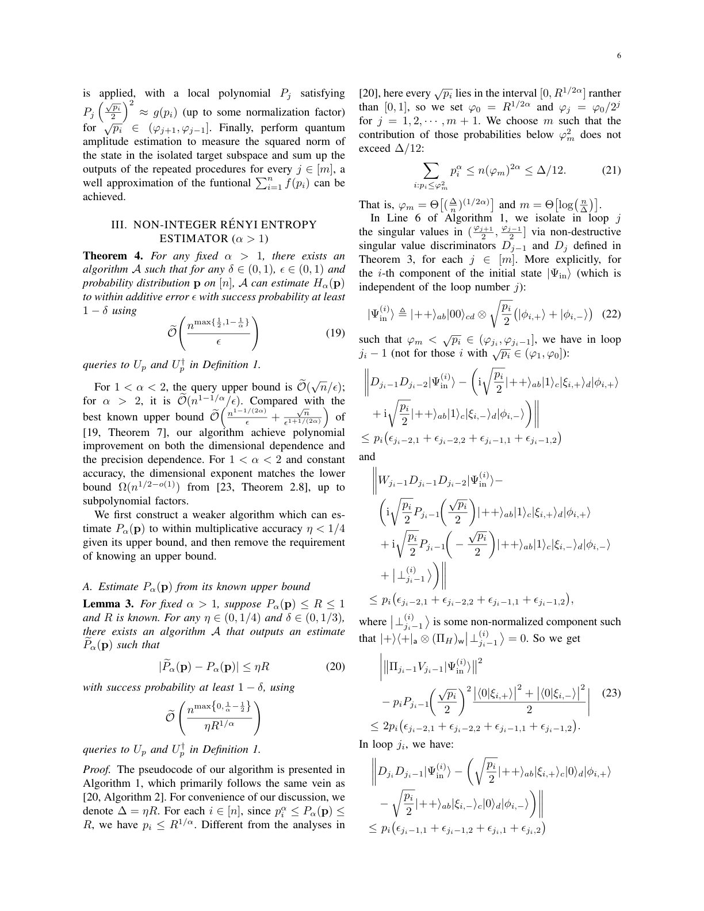
<figcaption class="paper-figure-caption"><b>Fig 5.</b> Low-resolution page preview, page 6</figcaption>
</figure>
</div>

<p><strong>Summary.</strong> This paper presents improved quantum algorithms for estimating Rényi entropies using quantum query access. By adapting a multi-level estimation framework, the authors achieve better query complexity bounds for both $\alpha > 1$ and $0 < \alpha < 1$. The work establishes optimal precision dependencies by matching the derived upper bounds with strong lower bounds.</p>
<p><strong>Why it may be interesting.</strong> The development of quantum algorithms for estimating fundamental statistical properties like entropy is crucial for quantum characterization of quantum states and quantum resources.</p>
<details>
<summary>Detailed structure</summary>
<p><strong>Main problem.</strong> The paper addresses the fundamental problem of estimating the Rényi entropy $H_\alpha(p)$ for a discrete probability distribution $p$ using quantum query access.</p>
<p><strong>Main result.</strong> They derive improved upper bounds and establish optimal lower bounds for the quantum query complexity required for this estimation, particularly for non-integer $\alpha$.</p>
<p><strong>Method.</strong> The approach adapts a multi-level estimation framework, utilizing quantum tools like Quantum Amplitude Estimation (QAE) and polynomial approximations, to estimate the required power sums.</p>
<p><strong>Model / system.</strong> The problem is modeled using purified quantum query-access to the distribution $p$, involving unitaries $U_p$ and projected unitary encodings.</p>
<p><strong>Key observables.</strong> Rényi entropy $H_\alpha(p)$ and the associated power sum $P_\alpha(p) = \sum p_i^\alpha$.</p>
<p><strong>Important parameters / regimes.</strong> The accuracy $\epsilon$ and the entropy parameter $\alpha$ (covering regimes $\alpha > 1$ and $0 < \alpha < 1$).</p>
<p><strong>Assumptions / limitations.</strong> The analysis relies on adapting the multi-level framework to handle relative approximation requirements for the power sums.</p>
<p><strong>Paper structure.</strong> The paper builds from general quantum tools (QSVT, QAE) to the specific multi-level framework, first addressing the $\alpha > 1$ case, and then outlining the approach for $0 < \alpha < 1$, culminating in complexity analysis and lower bound proofs.</p>
</details>
<details>
<summary>Abstract</summary>
<p>Entropy estimation of discrete probability distributions is a fundamental problem in statistical inference and quantum property estimation. In this paper, we study the problem of estimating Rényi entropy $H_α(\mathbf{p})$ for any distribution $\mathbf{p} = (p_i)_{i=1}^n$ given its purified quantum query-access. For non-integer $α> 1$, our algorithm estimates $H_α(\mathbf{p})$ to within additive error $ε$ using only $\widetilde{\mathcal{O}}\big(n^{\max\{1/2,1-1/α\}}/ε\big)$ queries, which improves the best known upper bound for dependence on both $n$ and $1/ε$. For $0<α<1$, our algorithm has query complexity $\widetilde{\mathcal{O}}\big(n^{1/(2α)}/ε^{\max\{1,1/(2α)\}}\big)$, which improves the dependence on $1/ε$ of the current best upper bound without incresing its $n$ dependence. Our approach adapts the multi-level estimation framework to relative approximation of the power sums and leverage binary search to remove the requirement of prior knowledge of them. We also strengthen the precision-dependent lower bound to $Ω\big(1/ε^{\max\{1,1/(2α)\}}\big)$ for $0<α<1$, which identifies the optimal precision dependence of our algorithm.</p>
</details>
<p><sub><a href="#top">↑ back to top</a></sub></p>

<p><a id="paper-2610.20006"></a></p>
<h3 id="multi-instantons-and-exact-wkb-stokes-jumps-in-multi-well-quantum-mechanics"><a href="http://arxiv.org/abs/2610.20006v1">Multi-Instantons and Exact-WKB Stokes Jumps in Multi-Well Quantum Mechanics</a></h3>
<p><strong>Authors:</strong> Alireza Behtash, Syo Kamata<br>
<strong>Type:</strong> theory · <strong>Category:</strong> other · <strong>PDF:</strong> <a href="https://arxiv.org/pdf/2610.20006v1">https://arxiv.org/pdf/2610.20006v1</a><br>
<strong>Analysis basis:</strong> full PDF text, analyzed in chunks
<strong>Topic relevance:</strong> <code>Keldysh / 2PI / non-Gaussian methods</code> <strong>1/5</strong></p>
<div class="figure-strip-hint">↔ Scroll figures horizontally</div>
<div class="paper-figures-scroll">
<figure class="paper-figure-card">
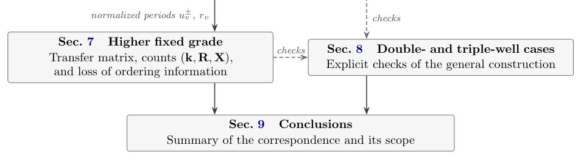
<figcaption class="paper-figure-caption"><b>Fig 1.</b> Figure 1: Logical structure of the paper. Solid arrows indicate that the results of one section are used as input in another, and dashed arrows indicate where the double- and triple-well cases of Sec. 8 check the general construction of Secs. 6 and 7.</figcaption>
</figure>
<figure class="paper-figure-card">
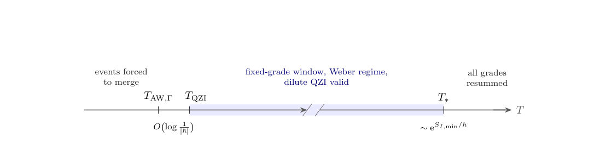
<figcaption class="paper-figure-caption"><b>Fig 2.</b> Figure 3: The scales of the period T at fixed grade. The Airy–Weber crossover TAW,Γ of Eq. (56) and the dilute-gas scale TQZI of Sec. 2.3 are both logarithmic in 1/ℏ, in either order, while the resummation scale T∗∼∆−1 np of Eq. (60) is exponentially larger, as indicated by the break in the axis. The shaded region denotes the sufficient fixed-grade window (61). The upper scale drawn is the one-instanton estimate for degenerate neighboring levels, whereas nondegenerate cases can have a later breakdown time.</figcaption>
</figure>
<figure class="paper-figure-card">
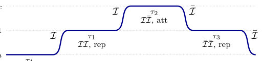
<figcaption class="paper-figure-caption"><b>Fig 3.</b> Figure 4: Trajectory x(t) of the minimal event sequence (64) of a two-barrier interval I = [a, b], labeled as in Fig. 2, on the circle of circumference T, with the endpoints t = 0 and t = T identified. Each event is an instanton I or an anti-instanton ¯I, and each separation τr spans one visit to a well. At the outer wells the trajectory turns back and the separation is an attractive I ¯I pair, while at the internal well it passes through twice, once as an II pair and once as a ¯I ¯I pair, both repulsive.</figcaption>
</figure>
<figure class="paper-figure-card">
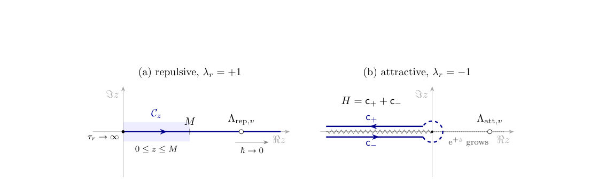
<figcaption class="paper-figure-caption"><b>Fig 4.</b> Figure 5: Integration contours of the single-separation integral (97) in the plane of the variable z of Eq. (96). The origin is the infinite-separation end τr →∞, and the open circle marks the coalescence point z = Λr, which recedes to infinity as ℏ→0. (a) Repulsive separation. The contour Cz is the positive real axis, first cut off at M inside the dilute region (shaded) and completed only after the semiclassical limit, which gives Eq. (100). (b) Attractive separation. The positive real axis is not admissible, and the BZJ continuation rotates the contour onto the rays c+ and c−on the two sides of the cut of zµv−1 along the negative real axis, which gives Eqs. (101) and (102). Together the...</figcaption>
</figure>
<figure class="paper-figure-card">
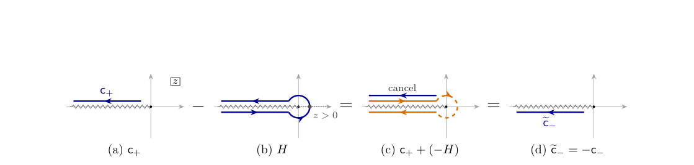
<figcaption class="paper-figure-caption"><b>Fig 5.</b> Figure 6: Illustration of Eq. (132) in the plane of the variable z of Eq. (96), with the cut of zµ−1</figcaption>
</figure>
</div>

<p><strong>Summary.</strong> This theoretical paper connects the semiclassical WKB approximation to the path integral formalism by studying multi-instanton contributions in multi-well potentials. It shows that the Stokes phenomenon, a key feature of WKB theory, is mathematically reproduced by analyzing the quasi-zero mode integral derived from the instanton action. This provides a deep, rigorous link between different mathematical descriptions of quantum tunneling.</p>
<p><strong>Why it may be interesting.</strong> The connection between nonperturbative instanton calculus (path integrals) and semiclassical quantization conditions (WKB/Stokes phenomena) is fundamental to understanding tunneling and spectral properties in complex quantum systems.</p>
<details>
<summary>Detailed structure</summary>
<p><strong>Main problem.</strong> The paper investigates the deep mathematical relationship between the exact-WKB Stokes jumps and the multi-instanton expansion in quantum mechanics.</p>
<p><strong>Main result.</strong> It establishes that the Stokes jump is reproduced by a linear Picard-Lefschetz relation derived from the quasi-zero mode integral, which reduces to Gamma and Hankel periods.</p>
<p><strong>Method.</strong> The authors employ advanced techniques combining the exact-WKB method, path integrals over instanton events, and Picard-Lefschetz theory.</p>
<p><strong>Model / system.</strong> The study focuses on one-dimensional quantum systems described by a potential with $N$ equal-depth minima (multi-well quantum mechanics).</p>
<p><strong>Key observables.</strong> Stokes jumps, two lateral connected exact-WKB coefficients, and the spectral splitting of the ground-state doublet.</p>
<p><strong>Important parameters / regimes.</strong> The analysis is performed in the dilute large-$T$ regime at fixed nonperturbative grade, involving parameters like $\hbar$ and the number of wells $N$.</p>
<p><strong>Assumptions / limitations.</strong> The results are derived within the regular dilute, one-loop, local Weber approximation.</p>
<p><strong>Figures summary.</strong> A numerical solution for a symmetric triple well confirms the theoretically derived two-barrier level splitting.</p>
<p><strong>Paper structure.</strong> The paper builds from the foundational case of a single barrier (relating to Bogomolny-Zinn-Justin cancellation) to the general multi-well case, deriving the quasi-zero mode integral and analyzing the structure of event sequences at higher fixed grades.</p>
</details>
<details>
<summary>Abstract</summary>
<p>We study the relation between the exact-WKB Delabaere--Dillinger--Pham Stokes jumps and the multi-instanton expansion of a one-dimensional potential with $N$ equal-depth minima. For a single barrier this relation is the Bogomolny--Zinn-Justin cancellation between the instanton--anti-instanton ambiguity and the Borel ambiguity of perturbation theory, and we extend it to every consecutive barrier interval and to the integration contours themselves. In the dilute large-$T$ regime at fixed nonperturbative grade, we derive the quasi-zero mode integral over the instanton separations from the Euclidean path integral and reduce it to Gamma and Hankel periods. With the local Weber level function of each well and one normalization per well fixed by the local Weber connection matrix, these periods reproduce the two lateral connected exact-WKB coefficients. The two lateral contours of each instanton--anti-instanton separation differ by exactly one Hankel cycle, and this linear Picard--Lefschetz relation reproduces the Stokes jump of the connected coefficient. A numerical solution of the Schrödinger equation for a symmetric triple well confirms the resulting two-barrier level splitting. At higher fixed grade, the map from ordered event sequences to normalized scalar coefficient products is not one-to-one. At leading dilute order the scalar weight of a closed event sequence depends only on the numbers of barrier crossings, $\mathcal I\bar{\mathcal I}$ pairs, and $\mathcal I\mathcal I$/$\bar{\mathcal I}\bar{\mathcal I}$ pairs. We construct two inequivalent grade-six triple-well event sequences with the same product of local Weber amplitudes, which embed in every potential with $N\ge3$ wells. Our results hold within the regular dilute, one-loop, local Weber approximation.</p>
</details>
<p><sub><a href="#top">↑ back to top</a></sub></p>

<p><a id="paper-2610.20515"></a></p>
<h3 id="petz-recovery-through-a-single-polar-transformation-for-approximate-quantum-error-correction"><a href="http://arxiv.org/abs/2610.20515v1">Petz Recovery through a Single Polar Transformation for Approximate Quantum Error Correction</a></h3>
<p><strong>Authors:</strong> Hanzhang Zhao, Shenglong Xu<br>
<strong>Type:</strong> theory · <strong>Category:</strong> quantum information and computing · <strong>PDF:</strong> <a href="https://arxiv.org/pdf/2610.20515v1">https://arxiv.org/pdf/2610.20515v1</a><br>
<strong>Analysis basis:</strong> full PDF text, analyzed in chunks
<strong>Topic relevance:</strong> <code>quantum measurements</code> <strong>1/5</strong></p>
<div class="figure-strip-hint">↔ Scroll figures horizontally</div>
<div class="paper-figures-scroll">
<figure class="paper-figure-card">
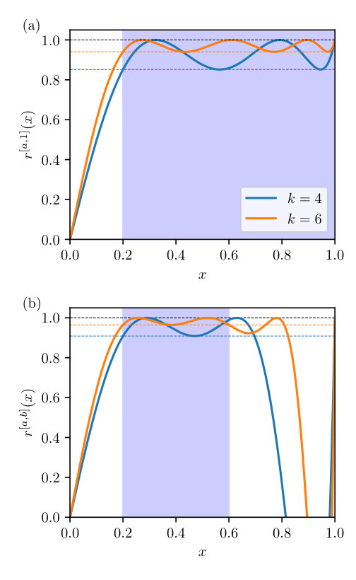
<figcaption class="paper-figure-caption"><b>Fig 1.</b> FIG. 1. Real odd polynomial approximations r(x) to the sign function for k = 4 (blue) and k = 6 (orange) QSVT itera- tions. These polynomials are realized as r(x) = Re[e−iϕp(x)] after a common phase choice. (a) Optimization on [0.2, 1]. (b) Optimization on [0.2, 0.6]. The shaded regions mark the optimization intervals. The black dashed lines mark the tar- get value 1, and the colored dashed lines mark the minimum polynomial values on the respective intervals. Increasing k or restricting the optimization interval improves the approxima- tion.</figcaption>
</figure>
<figure class="paper-figure-card">
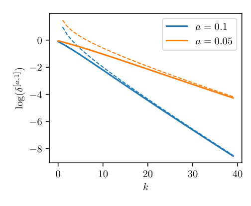
<figcaption class="paper-figure-caption"><b>Fig 2.</b> FIG. 2. Logarithm of the approximation error δ[a,1] as a func- tion of the iteration number k for different values of a. The dashed lines represent the asymptotic expressions in Eq. (52).</figcaption>
</figure>
<figure class="paper-figure-card">
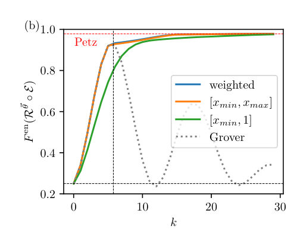
<figcaption class="paper-figure-caption"><b>Fig 3.</b> FIG. 3. Petz recovery for Haar-random unitary encoding of one logical qubit (nA = 1). Results use a single Haar-random realization for each system size. (a) Ideal Petz entanglement fidelity versus nD −n/2 where n is the number of qubits acted on by U. The black dashed lines mark fidelities 1/4 and 1. (b) Entanglement fidelity of the approximate recovery versus iteration count k for n = 8, nD = 6, using the generic type I block encoding in Eq. (55). The vertical dashed line marks the Grover estimate k∗in Eq. (66).</figcaption>
</figure>
<figure class="paper-figure-card">
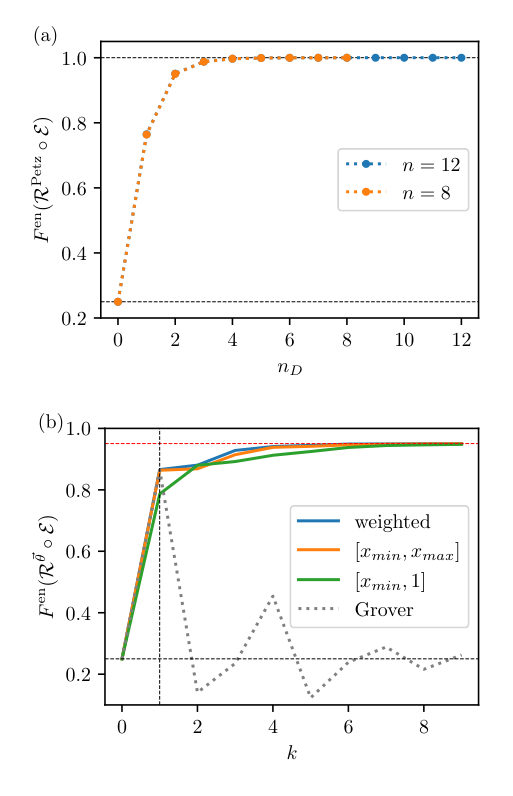
<figcaption class="paper-figure-caption"><b>Fig 4.</b> FIG. 4. Petz recovery in the Hayden–Preskill protocol with one logical qubit (nA = 1) and a Haar-random encoding uni- tary. Results use a single Haar-random realization for each system size. (a) Ideal Petz entanglement fidelity versus the number of output qubits nD. Here n counts the qubits acted on by U, excluding the entangled register B′, which is also available to the decoder. Near-unit fidelity is obtained with only a few qubits in D. (b) Entanglement fidelity versus iter- ation count k for n = 8, nD = 2, using the reduced (II′)-HP block encoding in Eq. (72). One Grover iteration gives a large initial improvement, while the optimized sequences continue toward the Petz benchmark.</figcaption>
</figure>
</div>

<p><strong>Summary.</strong> This paper develops a method to implement the near-optimal Petz recovery map for Approximate Quantum Error Correction using a single Quantum Singular Value Transformation (QSVT). By exploiting the polar structure of the map, the authors achieve a circuit-friendly, postselection-free decoder. This work provides a quantifiable measure of performance via the diamond distance, advancing the practical realization of robust quantum error correction.</p>
<p><strong>Why it may be interesting.</strong> It provides a concrete, circuit-implementable method (QSVT) to realize a theoretically optimal decoder (Petz map) for QEC, which is highly relevant for building practical quantum hardware.</p>
<details>
<summary>Detailed structure</summary>
<p><strong>Main problem.</strong> The paper addresses the challenge of implementing the Petz recovery map, a near-optimal decoder for Approximate Quantum Error Correction (AQEC), due to its complex inverse-square-root normalization.</p>
<p><strong>Main result.</strong> The authors show that the Petz recovery can be implemented efficiently using a single Quantum Singular Value Transformation (QSVT) based on the map's polar structure, yielding an error bound that decays exponentially with the number of iterations.</p>
<p><strong>Method.</strong> The core method involves reformulating the Petz isometry using its polar structure, which allows the complex recovery map to be realized deterministically via a QSVT sequence.</p>
<p><strong>Model / system.</strong> The study is set within the framework of Quantum Error Correction (QEC), analyzing the relationship between the encoding channel $E$, the Petz recovery map $\mathcal{R}_{	ext{Petz}}$, and the resulting approximate recovery channel $\mathcal{R}_{\vec{	heta}}$.</p>
<p><strong>Key observables.</strong> Diamond distance between approximate and ideal channels, Entanglement Fidelity ($F_{	ext{en}}$), and the spectral width derived from singular values.</p>
<p><strong>Important parameters / regimes.</strong> The error bound depends on the smallest nonzero scaled singular value ($\lambda_{\min}$) and the number of QSVT iterations ($k$).</p>
<p><strong>Assumptions / limitations.</strong> The analysis often assumes the encoding environment $\sigma$ is full rank for certain simplifications, and the error bound derivation relies on bounding the diamond distance between isometries.</p>
<p><strong>Figures summary.</strong> Not specified, but the notes detail mathematical derivations involving equations for the Petz map, QSVT transformations, and error bounds.</p>
<p><strong>Paper structure.</strong> The paper builds from defining the Petz map and its limitations, proposes the polar structure approach, derives the QSVT implementation, and finally analyzes the performance using diamond distance bounds and applying the method to specific protocols like Haar-random encoding.</p>
</details>
<details>
<summary>Abstract</summary>
<p>The Petz recovery map provides a near optimal decoder for approximate quantum error correction, but its inverse square-root normalization complicates circuit implementation. We use the polar structure of the Petz recovery isometry to implement recovery through a single quantum singular value transformation (QSVT). We give explicit block-encoding circuits and an extended recovery isometry that yields approximate Petz recovery without postselection. We bound the diamond distance between the approximate and ideal Petz encoding-recovery channels in terms of a spectrum-weighted loss, which provides a channel specific objective for optimizing the QSVT angles. Uniform polynomial approximation yields an asymptotic error bound that decays exponentially with the number of QSVT iterations, at a rate controlled by the smallest nonzero scaled singular value. Applications to Haar-random encoding and the Hayden-Preskill protocol illustrate the tradeoff between circuit depth and recovery accuracy and place existing scrambling decoders within a common Petz recovery framework.</p>
</details>
<p><sub><a href="#top">↑ back to top</a></sub></p>

<p><a id="paper-2610.19109"></a></p>
<h3 id="post-optimization-subspace-corrections-to-quantum-ansatze"><a href="http://arxiv.org/abs/2610.19109v1">Post-Optimization Subspace Corrections to Quantum Ansätze</a></h3>
<p><strong>Authors:</strong> Prince Frederick Kwao, Bharath Sambasivam, Jason Saroni, Srivathsan Poyyapakkam Sundar, Edwin Barnes, Ayush Asthana<br>
<strong>Type:</strong> theory · <strong>Category:</strong> quantum information and computing · <strong>PDF:</strong> <a href="https://arxiv.org/pdf/2610.19109v1">https://arxiv.org/pdf/2610.19109v1</a><br>
<strong>Analysis basis:</strong> full PDF text, analyzed in chunks
<strong>Topic relevance:</strong> <code>quantum measurements</code> <strong>1/5</strong></p>
<div class="figure-strip-hint">↔ Scroll figures horizontally</div>
<div class="paper-figures-scroll">
<figure class="paper-figure-card">
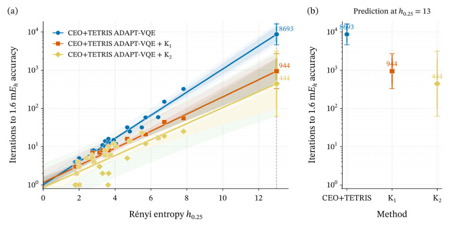
<figcaption class="paper-figure-caption"><b>Fig 1.</b> FIG. 1. Adaptive outer iterations required to reach 1.6 mEh accuracy for CEO+TETRIS ADAPT-VQE and its first-order (K1) and second-order (K2) Krylov subspace corrections as a function of R´enyi entropy h0.25. (a) Results for 27 molecular electronic- structure cases. Solid lines are least-squares fits of ln Niter to h0.25, where Niter is the iteration count, with R2 log = 0.970, 0.865, and 0.613 for CEO+TETRIS ADAPT-VQE, K1, and K2, respectively. (b) Conditional extrapolations at h0.25 = 13. Darker bands and thick translucent bars denote 95% confidence intervals for the fitted trend; lighter bands and capped error bars denote 95% prediction intervals. Observations span 1.764 ≤h0.25 ≤7.818;...</figcaption>
</figure>
<figure class="paper-figure-card">
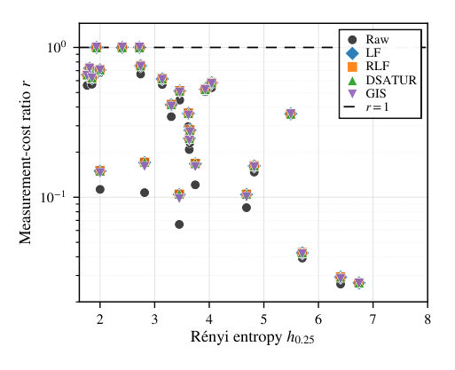
<figcaption class="paper-figure-caption"><b>Fig 2.</b> FIG. 2. Modeled normalized resource-cost ratio r = CK1/CADAPT for first-order Krylov subspace diagonalization (K1) relative to full CEO+TETRIS ADAPT-VQE as a func- tion of R´enyi entropy h0.25. The analysis includes 26 cases, and the horizontal dashed line marks r = 1. K1 is charged once at the retrospectively identified earliest iteration satisfy- ing the 1.6 mEh threshold; unsuccessful intermediate checks are not charged.</figcaption>
</figure>
<figure class="paper-figure-card">
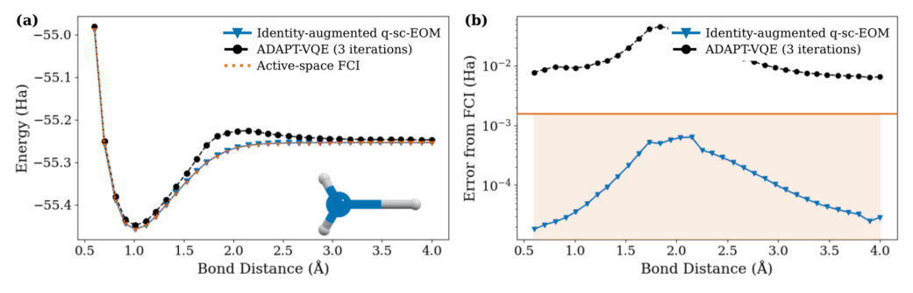
<figcaption class="paper-figure-caption"><b>Fig 3.</b> FIG. 3. NH3 ground-state potential energy and absolute error relative to active-space FCI in the STO-6G basis with a (4e, 4o) active space, corresponding to eight qubits. The displayed bond-stretching coordinate spans 0.6–4.0 ˚A. The ADAPT-VQE reference is truncated after three outer iterations, after which q-sc-EOM is applied without reoptimizing the circuit. (a) Energies from truncated ADAPT-VQE, q-sc-EOM, and FCI. (b) Absolute errors |E −EFCI|; the shaded region marks the 1.6 mEh accuracy threshold. The largest truncated ADAPT-VQE error is approximately 40 mEh, whereas the q-sc-EOM error remains below 1.0 mEh over the displayed grid. The axis unit Ha denotes the hartree.</figcaption>
</figure>
<figure class="paper-figure-card">
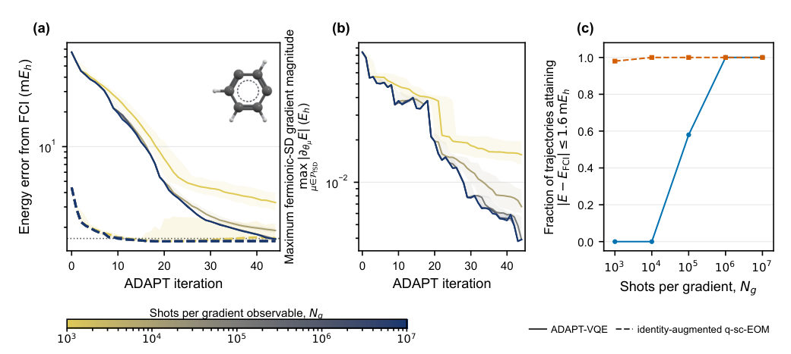
<figcaption class="paper-figure-caption"><b>Fig 4.</b> FIG. 4. Effect of finite-shot ADAPT gradient estimation on operator selection for singlet m-benzyne mapped to 12 qubits. (a) Median FCI energy error for ADAPT-VQE (solid) and identity-augmented q-sc-EOM (dashed). (b) Median maximum exact gradient magnitude over the fermionic singles-and-doubles pool. Bands in (a,b) show the 10th–90th percentiles over 100 trajectories, and color denotes shots per gradient observable, Ng. (c) Fraction of trajectories attaining |E −EFCI| ≤1.6 mEh at any evaluated ADAPT iteration.</figcaption>
</figure>
<figure class="paper-figure-card">
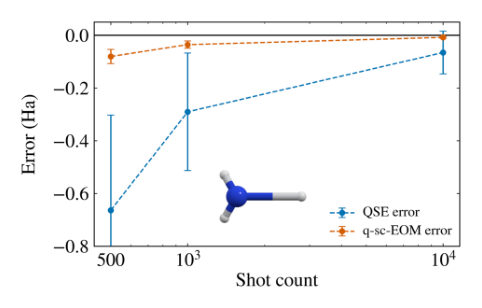
<figcaption class="paper-figure-caption"><b>Fig 5.</b> FIG. 5. Finite-shot ground-state energy errors for planar NH3 in STO-6G with a (4e, 4o) active space. QSE and q- sc-EOM use 500, 103, or 104 shots per measured matrix ele- ment. The signed error is ∆E = Esampled −EFCI, where EFCI is the active-space FCI ground-state energy. Symbols show the mean over five independent sampling realizations at each shot count; error bars show ± one standard deviation. The black horizontal line marks ∆E = 0. Only finite-shot sam- pling is included; gate and readout noise are excluded. The axis unit Ha denotes the hartree.</figcaption>
</figure>
</div>

<p><strong>Summary.</strong> This paper introduces post-optimization techniques—Krylov subspace corrections and identity-augmented q-sc-EOM—to enhance variational quantum algorithms for chemistry. These methods significantly reduce the required circuit depth and measurement count needed to achieve chemical accuracy on near-term quantum hardware. The results demonstrate a substantial improvement in resource efficiency for simulating molecular electronic structure.</p>
<p><strong>Why it may be interesting.</strong> This work directly addresses the resource scaling bottleneck in quantum chemistry simulations, providing concrete, theoretically grounded methods to enhance the performance of variational quantum algorithms for molecular physics.</p>
<details>
<summary>Detailed structure</summary>
<p><strong>Main problem.</strong> The primary challenge is reducing the resource requirements, specifically circuit depth and measurement count, for applying variational quantum algorithms (VQAs) to chemical simulations on near-term quantum hardware.</p>
<p><strong>Main result.</strong> The proposed post-optimization techniques, Krylov subspace diagonalization and identity-augmented q-sc-EOM, can reduce required adaptive iterations by up to sixfold and measurement costs by up to fortyfold.</p>
<p><strong>Method.</strong> The authors augment optimized ADAPT-VQE states by applying post-optimization subspace corrections, namely Hamiltonian-moment Krylov subspace diagonalization and identity-augmented quantum self-consistent equation of motion (q-sc-EOM).</p>
<p><strong>Model / system.</strong> The work focuses on molecular electronic-structure problems, using active-space Hamiltonians mapped to qubits via the Jordan-Wigner transformation. The methods are tested on molecular systems up to 20 qubits.</p>
<p><strong>Key observables.</strong> Energy accuracy (target threshold: 1.6 mEh), required adaptive iterations, measurement cost, and molecular potential-energy curves.</p>
<p><strong>Important parameters / regimes.</strong> Determinant Rényi entropy ($h_{0.25}$), number of qubits (up to 20), and the target energy threshold (1.6 mEh).</p>
<p><strong>Assumptions / limitations.</strong> The techniques are applied to states already optimized by ADAPT-VQE, and the analysis considers finite-shot estimation limitations.</p>
<p><strong>Figures summary.</strong> Figures compare the reduction in required adaptive iterations (Krylov correction) and model the resource-cost ratio improvement achieved by the proposed corrections.</p>
<p><strong>Paper structure.</strong> The paper introduces the resource limitations of VQAs, details the two post-optimization techniques (Krylov and q-sc-EOM), presents quantitative results showing significant resource reductions across molecular systems, and concludes by outlining the path toward improved accuracy and reduced circuit growth.</p>
</details>
<details>
<summary>Abstract</summary>
<p>Circuit depth and measurement count are the main limitations for chemical applications of the leading variational quantum algorithms on quantum computers. We show that both resource requirements can be reduced by augmenting adaptive variational quantum algorithms with post-optimization corrective techniques. We focus on two such techniques---Hamiltonian-moment Krylov subspace diagonalization and the identity-augmented quantum self-consistent equation of motion (q-sc-EOM)---applied to optimized ADAPT-VQE states without further ansatz growth or nonlinear optimization. Across molecular systems studied with up to 20 qubits, first-order Krylov correction reduces the optimized iterations (and the corresponding number of adaptive layers) needed to reach the $1.6~\mathrm{m}E_h$ threshold by up to approximately sixfold, with a general trend toward larger reductions at higher determinant Rényi entropy. We also find measurement-cost reductions of up to approximately fortyfold using a suitable resource-cost model. Identity-augmented q-sc-EOM improves molecular potential-energy curves obtained from truncated ADAPT-VQE ansätze with limited expressivity and recovers accuracy from states produced by sampled operator ranking without additional gradient-based operator selection, providing an advantage when small pool gradients make selection measurement intensive. Together, these post-optimization corrections offer routes to improve energy accuracy and reduce adaptive circuit growth in quantum algorithms as quantum hardware advances.</p>
</details>
<p><sub><a href="#top">↑ back to top</a></sub></p>

<p><a id="paper-2610.19255"></a></p>
<h3 id="quantum-classical-algorithm-interpolation-for-spatial-search"><a href="http://arxiv.org/abs/2610.19255v1">Quantum-classical algorithm interpolation for spatial search</a></h3>
<p><strong>Authors:</strong> Diogo Ramos, Duarte Magano<br>
<strong>Type:</strong> theory · <strong>Category:</strong> quantum information and computing · <strong>PDF:</strong> <a href="https://arxiv.org/pdf/2610.19255v1">https://arxiv.org/pdf/2610.19255v1</a><br>
<strong>Analysis basis:</strong> full PDF text, analyzed in chunks
<strong>Topic relevance:</strong> <code>quantum measurements</code> <strong>1/5</strong></p>
<div class="figure-strip-hint">↔ Scroll figures horizontally</div>
<div class="paper-figures-scroll">
<figure class="paper-figure-card">
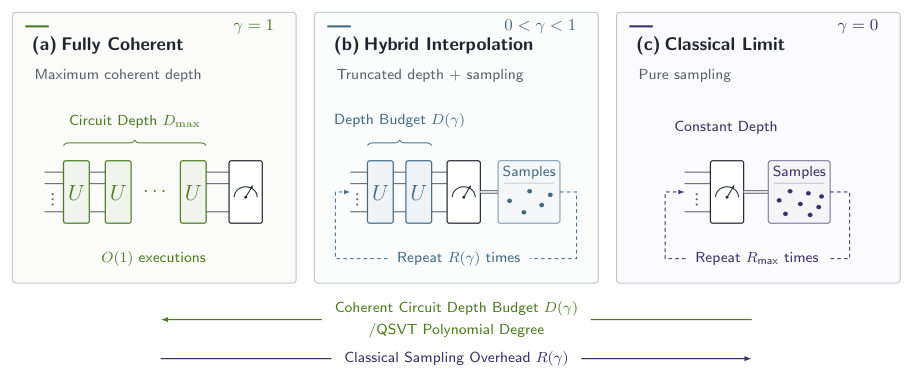
<figcaption class="paper-figure-caption"><b>Fig 1.</b> Figure 1: The framework of quantum-classical interpolation. The parameter γ ∈[0, 1] smoothly trades coherent circuit depth D(γ) for classical repetitions R(γ), continuously connecting deep unitary evolution (γ = 1) to classical sampling (γ = 0).</figcaption>
</figure>
<figure class="paper-figure-card">
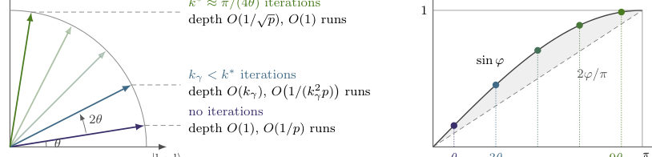
<figcaption class="paper-figure-caption"><b>Fig 2.</b> Figure 2: Interpolated amplitude amplification in its original formulation, with sin θ = √p. (a) Each Grover iteration rotates the state by 2θ towards |good⟩. Stopping after kγ &lt; k∗iterations reduces the depth, and the resulting reduction in success probability is compensated for by repeating the procedure. (b) Success amplitude sin φ after k iterations, where φ = (2k + 1)θ. For φ ≤π/2, concavity ensures the amplitude grows at least linearly with k and the number of runs decreases quadratically with the depth.</figcaption>
</figure>
<figure class="paper-figure-card">
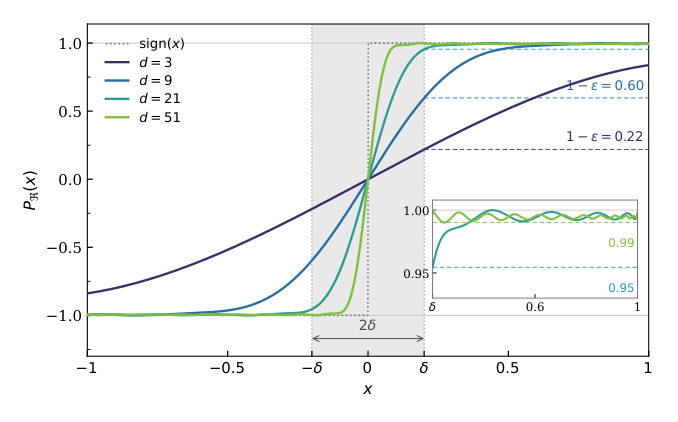
<figcaption class="paper-figure-caption"><b>Fig 3.</b> Figure 3: Illustration of the degree–accuracy trade-off for odd polynomials Pℜapproximating sign(x) at fixed resolution δ = 0.2. The displayed errors on [δ, 1] range from ϵ ≈0.78 at d = 3 to ϵ ≈0.01 at d = 51. The horizontal dashed lines indicate the corresponding amplitude levels 1 −ϵ. A lower bound of 1 −ϵ throughout [δ, 1] gives success probability at least (1 −ϵ)2 per attempt, relating the polynomial approximation directly to the required repetitions.</figcaption>
</figure>
<figure class="paper-figure-card">
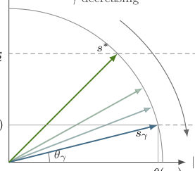
<figcaption class="paper-figure-caption"><b>Fig 4.</b> Figure 5: Geometric illustration of the quantum-classical interpolation of the semi-absorbing parameter sγ. The principal eigenvector |vn(s)⟩= cos θ(s) |U⟩+ sin θ(s) |M⟩moves along the arc as s decreases and the angle θ controls both the marked amplitude and the interpolated hitting time HT(s) = sin4θ HT+. Moving toward |U⟩therefore reduces the coherent depth (linearly in sin θ) at the cost of quadratically increasing the number of repetitions.</figcaption>
</figure>
</div>

<p><strong>Summary.</strong> This paper introduces a novel framework to design quantum-classical hybrid algorithms for spatial search, interpolating between purely classical and fully quantum regimes using a parameter $\gamma$. By explicitly trading off circuit depth against total query complexity, it provides a resource-aware approach for implementing quantum speedups on near-term quantum hardware.</p>
<p><strong>Why it may be interesting.</strong> This work provides a crucial resource for quantum algorithm design by quantifying the resource trade-offs, offering practical guidelines for optimizing quantum circuits for current noisy intermediate-scale quantum (NISQ) hardware.</p>
<details>
<summary>Detailed structure</summary>
<p><strong>Main problem.</strong> The paper addresses the challenge of realizing quantum speedups for spatial search algorithms on near-term quantum devices by developing a continuous interpolation between classical and fully coherent quantum regimes.</p>
<p><strong>Main result.</strong> It derives a parameterised family of hybrid quantum-classical algorithms that achieves a controlled trade-off between circuit depth and total query complexity for spatial search.</p>
<p><strong>Method.</strong> The core method involves parameterizing the search algorithm with $\gamma \in [0, 1]$, allowing the cost to be expressed as a combination of classical repetitions and quantum circuit depth, thereby interpolating between known limits.</p>
<p><strong>Model / system.</strong> The model is spatial search on a connected undirected graph $G=(X, E)$ using quantum walks governed by an ergodic, reversible Markov chain $P$. The analysis is applied to both general amplitude amplification and specific quantum walk search scenarios.</p>
<p><strong>Key observables.</strong> Total query complexity, quantum-walk circuit depth, and the success probability of finding a marked vertex.</p>
<p><strong>Important parameters / regimes.</strong> The interpolation parameter $\gamma \in [0, 1]$, the classical hitting time $\mathrm{HT}$, and the setup, update, and checking costs ($\mathsf{S}, \mathsf{U}, \mathsf{C}$).</p>
<p><strong>Assumptions / limitations.</strong> The analysis assumes the graph structure allows for this continuous interpolation and relies on bounding the failure probability in iterative search strategies.</p>
<p><strong>Figures summary.</strong> Figure 1 illustrates the trade-off between coherent circuit depth and classical repetitions across the interpolation parameter $\gamma$. Figure 2 shows the interpolation for amplitude amplification, relating depth to the number of required runs.</p>
<p><strong>Paper structure.</strong> The paper builds from general interpolation frameworks (Amplitude Amplification) to specific applications (Quantum Walk Search), developing theorems for different scenarios (e.g., known vs. unknown hitting time, known vs. unknown success probability) using an interpolation parameter $\gamma$.</p>
</details>
<details>
<summary>Abstract</summary>
<p>Quantum-walk algorithms can quadratically reduce the dependence of spatial search on the classical hitting time $\mathrm{HT}$. Realising this speedup using standard quantum-walk algorithms, however, requires deep coherent circuits, limiting their applicability on near-term and early fault-tolerant quantum devices. We derive a parameterised family of hybrid quantum-classical spatial search algorithms that continuously interpolates between the classical and fully coherent quantum regimes, trading off circuit depth for total query complexity. For any $γ\in[0,1]$, our algorithms use circuits of depth $\widetilde{O}(\mathrm{HT}^{γ/2})$ and find a marked vertex with constant success probability at total cost $\widetilde{O}(\mathrm{HT}^{1-γ}\mathsf{S} + \mathrm{HT}^{1-γ/2}(\mathsf{U} + \mathsf{C}))$, where $\mathsf{S}$, $\mathsf{U}$, and $\mathsf{C}$ denote the setup, update, and checking costs, respectively. We also derive an optimal continuous depth-query trade-off for fixed-point amplitude amplification, providing a potential building block for other hybrid designs.</p>
</details>
<p><sub><a href="#top">↑ back to top</a></sub></p>

<p><a id="paper-2610.19713"></a></p>
<h3 id="room-temperature-metallic-2d-ferromagnetism-stabilized-by-quantum-metric"><a href="http://arxiv.org/abs/2610.19713v1">Room-Temperature Metallic 2D Ferromagnetism Stabilized by Quantum Metric</a></h3>
<p><strong>Authors:</strong> Teng-Fei Ying, Jianqi Zhong, Songyuan Geng, Fangjie Chen, Haoxiang Li, Benjamin T. Zhou<br>
<strong>Type:</strong> theory · <strong>Category:</strong> strongly correlated electrons · <strong>PDF:</strong> <a href="https://arxiv.org/pdf/2610.19713v1">https://arxiv.org/pdf/2610.19713v1</a><br>
<strong>Analysis basis:</strong> full PDF text, analyzed in chunks
<strong>Topic relevance:</strong> <code>Keldysh / 2PI / non-Gaussian methods</code> <strong>1/5</strong></p>
<div class="figure-strip-hint">↔ Scroll figures horizontally</div>
<div class="paper-figures-scroll">
<figure class="paper-figure-card">
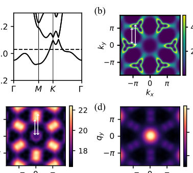
<figcaption class="paper-figure-caption"><b>Fig 1.</b> FIG. 1. (a) Ab initio-based non-interacting band structure of YCl electride. The dashed line refers to the chemical poten- tial at natural band filling. (b) Fermi surface of the realistic YCl model, obtained from the Fermi surface spectral func- tion WF (k) = P</figcaption>
</figure>
<figure class="paper-figure-card">
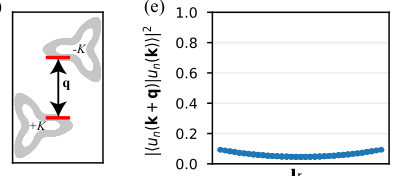
<figcaption class="paper-figure-caption"><b>Fig 2.</b> FIG. 2. (a) Schematic of the layer-orbital-valley locking (LOVC) in YCl electride. Bloch states connected by the nesting vector Q are nearly orthogonal, thus suppressing the wave function overlap between Bloch states from opposite valleys aw well as the exchange coupling leading to density waves. (b) The Berry curvature distribution in the lowest two bands of YCl. (c) Trace of the quantum metric tensor P</figcaption>
</figure>
<figure class="paper-figure-card">
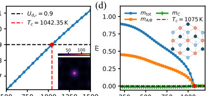
<figcaption class="paper-figure-caption"><b>Fig 3.</b> FIG. 3. (a) Schematic of the d±2 = dx2−y2 ± idxy or- bitals carrying an out-of-plane orbital angular momentum Lz = ±2ℏ, which gives rise to the dominant atomic spin- orbit coupling in YCl [30]. θ measures the angular deviation of spin-polarization from the z-axis. (b) Magnetic anisotropy energy per unit cell ∆F(θ) at T = 300 K. Due to the Ising- like spin-orbit coupling in YCl, the free energy is minimized for out-of-plane magnetization with θ = 0 and π, and max- imized for in-plane magnetization with θ = π/2. (c) The critical Hubbard interaction Uc obtained under random phase approximation, where the horizontal line Udz2 = 0.9 eV [30] intersects Uc(T) at a critical temperature as T RPA c...</figcaption>
</figure>
</div>

<p><strong>Summary.</strong> This work proposes that the unique quantum geometry inherent in the dice-lattice of YCl stabilizes a room-temperature 2D metallic ferromagnetism. By incorporating quantum-metric corrections into the spin susceptibility calculation, the authors successfully shift the theoretical prediction away from conventional density-wave instability towards a robust, high-temperature FM state. This establishes a new paradigm where quantum geometry dictates fundamental magnetic properties in correlated solids.</p>
<p><strong>Why it may be interesting.</strong> The explicit incorporation of quantum geometry (quantum metric) to stabilize a high-temperature magnetic phase in a correlated electron system provides a novel theoretical tool for understanding magnetism beyond simple nesting arguments.</p>
<details>
<summary>Detailed structure</summary>
<p><strong>Main problem.</strong> The study aims to determine the nature of magnetic ordering (SDW vs. FM) in 2D metallic systems and to establish the role of quantum geometry in stabilizing room-temperature magnetism.</p>
<p><strong>Main result.</strong> The inclusion of quantum-metric corrections fundamentally shifts the prediction from a spin-density-wave (SDW) order to a uniform ferromagnetism (FM) with a predicted Curie temperature well above room temperature.</p>
<p><strong>Method.</strong> The analysis employs Random Phase Approximation (RPA) and Hartree-Fock (HF) theory, calculating the spin susceptibility using both conventional and quantum-metric-corrected forms.</p>
<p><strong>Model / system.</strong> The research focuses on the YCl electride material, which possesses a dice-lattice structure and exhibits flat bands. The underlying physics is modeled using multi-orbital tight-binding Hamiltonians incorporating strong spin-orbit coupling (SOC) and local Coulomb interactions.</p>
<p><strong>Key observables.</strong> Spin susceptibility $\chi_0(\mathbf{q})$, the quantum-metric tensor $g_{\mu
u}^n(\mathbf{k})$, and the resulting magnetic ordering vector $\mathbf{Q}$ (where $\mathbf{Q}=0$ implies FM).</p>
<p><strong>Important parameters / regimes.</strong> Room temperature (300 K), high Curie temperatures ($T_c \sim 1000$ K), and the quantum metric contribution derived from layer-orbital-valley coupling (LOVC).</p>
<p><strong>Assumptions / limitations.</strong> The analysis relies on the RPA and HF approximations, and crucially assumes that the quantum metric contribution is the decisive factor resolving the conflict between theory and experiment.</p>
<p><strong>Figures summary.</strong> Figures illustrate the band structure and Fermi surface, contrasting the conventional susceptibility (predicting SDW) with the quantum-metric corrected susceptibility (predicting FM). Other figures detail the LOVC effect and the resulting magnetic anisotropy favoring out-of-plane magnetization.</p>
<p><strong>Paper structure.</strong> The paper progresses by first identifying the theoretical conflict (SDW vs. FM), then introducing the quantum-metric formalism to correct the susceptibility calculation, demonstrating how this correction stabilizes the FM state, and finally confirming the high $T_c$ using advanced HF/RPA calculations.</p>
</details>
<details>
<summary>Abstract</summary>
<p>The recent discovery of long-sought dice-lattice bands in layered electride YCl opens up unprecedented opportunities for studying correlated electrons in real dice lattice systems. While the weakly dispersive band at the Fermi level is partially filled and density-wave states are expected due to Fermi surface nesting based on conventional theories, the ARPES measurement nevertheless revealed a uniform flat band splitting of 0.5 eV, suggesting unusual ferromagnetism (FM) borne out of the metallic 2D dice lattice. In this Letter, we propose that the uniform metallic FM order is stabilized by the prominent quantum metric near topological band crossing points at K and K', which reconstructs the magnetic instability in the dice metal and tips the density-wave instability toward a uniform FM order. Importantly, our analysis based on random phase approximation (RPA) and Hartree-Fock theory predicts a remarkably high Curie temperature above room temperature for the 2D FM order. These findings establish the first example of a room-temperature 2D metallic magnet stabilized by quantum metric, which not only exemplifies the fundamental significance of quantum geometry in solids but also bears far-reaching applications in energy-efficient high-density magnetic memories.</p>
</details>
<p><sub><a href="#top">↑ back to top</a></sub></p>

<p><a id="paper-2610.19276"></a></p>
<h3 id="signatures-of-symmetry-stabilized-dirac-fermions-in-correlated-oxide-canbo3-thin-films"><a href="http://arxiv.org/abs/2610.19276v1">Signatures of symmetry-stabilized Dirac fermions in correlated oxide CaNbO3 thin films</a></h3>
<p><strong>Authors:</strong> Yunkyu Park, Seoung-Hun Kang, Jeongkeun Song, Minsik Kong, Seohee Kim, Shan Lin, Eun Sang Choi, Km Rubi, Hua Zhou, Sangmoon Yoon, Hu Miao, Satoshi Okamoto, Jong Mok Ok, Ho Nyung Lee<br>
<strong>Type:</strong> both · <strong>Category:</strong> strongly correlated electrons · <strong>PDF:</strong> <a href="https://arxiv.org/pdf/2610.19276v1">https://arxiv.org/pdf/2610.19276v1</a><br>
<strong>Analysis basis:</strong> full PDF text, analyzed in chunks
<strong>Topic relevance:</strong> <code>analog quantum simulation</code> <strong>1/5</strong></p>
<div class="figure-strip-hint">↔ Scroll figures horizontally</div>
<div class="paper-figures-scroll">
<figure class="paper-figure-card">
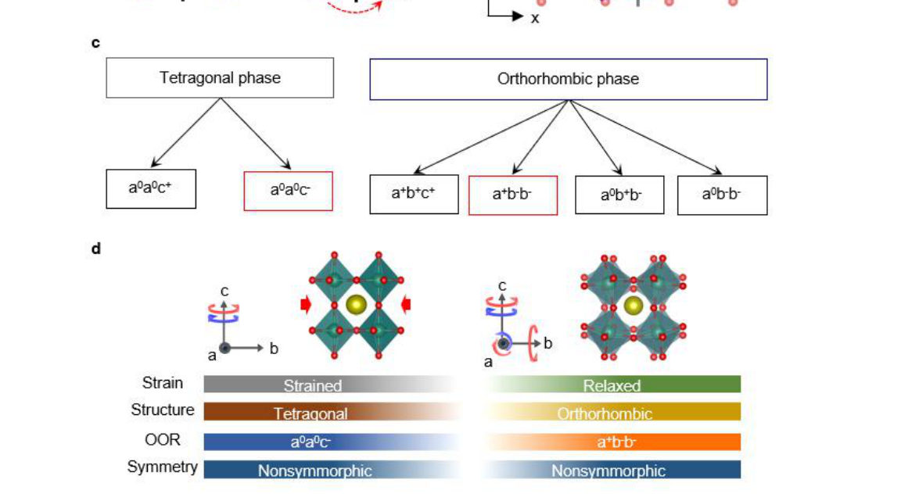
<figcaption class="paper-figure-caption"><b>Fig 1.</b> Fig. 1. Design principle for strain-controlled nonsymmorphic symmetry in CaNbO3 films. (a) Schematic comparison of symmorphic and nonsymmorphic crystal symmetry. In symmorphic symmetry, all generating symmetry operations leave at least one common point invariant, whereas nonsymmorphic symmetry combines a point-group operation with a fractional lattice translation. (b) Conceptual illustration of nonsymmorphic symmetry in perovskite oxides mediated by oxygen octahedral rotations (OOR). The highlighted octahedra undergo mirror reflection (red dashed arrow) combined with half-unit-cell translation (blue dashed arrow), forming a glide-symmetry operation characteristic of nonsymmorphic...</figcaption>
</figure>
<figure class="paper-figure-card">
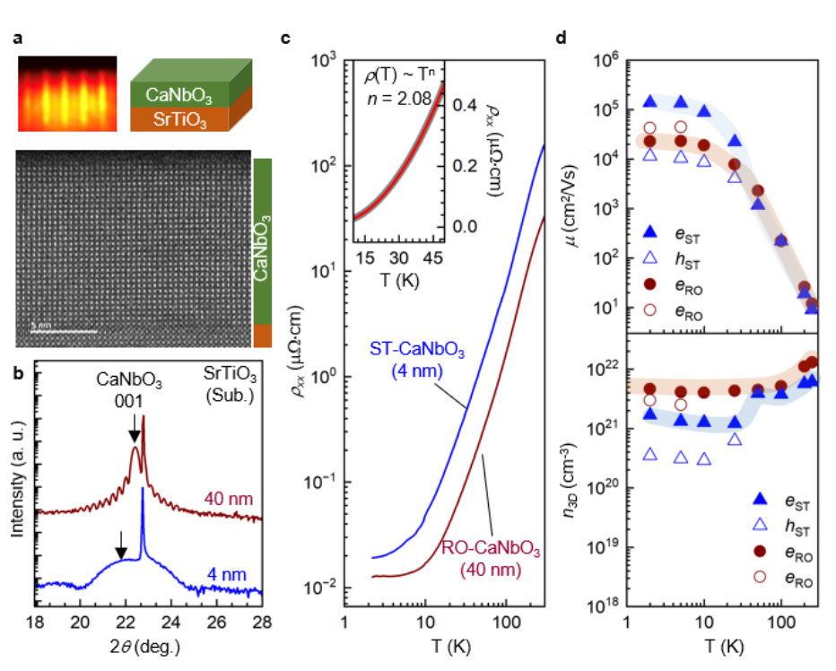
<figcaption class="paper-figure-caption"><b>Fig 2.</b> Fig. 2. Structural and transport properties of oxygen-octahedral-symmetry-controlled CaNbO₃ films. (a) Reflection high-energy electron diffraction (RHEED) pattern (top left), schematic illustration of the epitaxial strain control in CaNbO3/SrTiO3 heterostructure (top right), and cross- sectional high-angle annular dark-field scanning transmission electron microscopy (HAADF- STEM) image (bottom) of the epitaxial CaNbO3 film on SrTiO3. The STEM image reveals atomically sharp interfaces and coherent epitaxial growth. (b) X-ray diffraction scans of strained (4 nm) and relaxed (40 nm) CaNbO3 films. Film diffraction peaks are marked by arrows, while the asterisk denotes the substrate peak. (c)...</figcaption>
</figure>
<figure class="paper-figure-card">
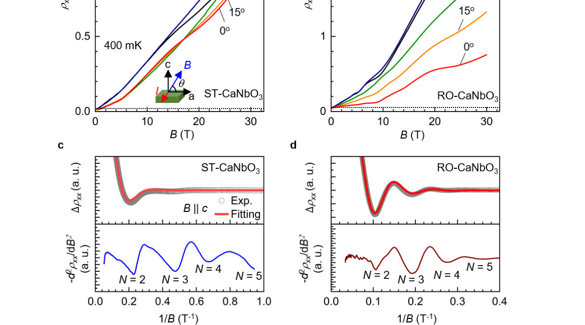
<figcaption class="paper-figure-caption"><b>Fig 3.</b> Fig. 3. Shubnikov–de Haas (SdH) oscillations and Fermi surface analysis. Magnetic-field- dependent longitudinal resistivity (xx) measured at 400 mK for (a) strained tetragonal (ST) and (b) relaxed orthorhombic (RO) CaNbO3 films at various field rotation angles with the magnetic field applied perpendicular to the current (B⟂I). Oscillatory component of the magnetoresistivity, Δρxx, and second derivative of the magnetoresistivity, −d2ρxx/dB2 as a function of inverse magnetic field (1/B) for (c) ST and (d) RO films. Red lines represent fits using the Lifshitz–Kosevich formalism. Landau level indices (N) are assigned to the extrema of −d2ρxx/dB2.</figcaption>
</figure>
<figure class="paper-figure-card">
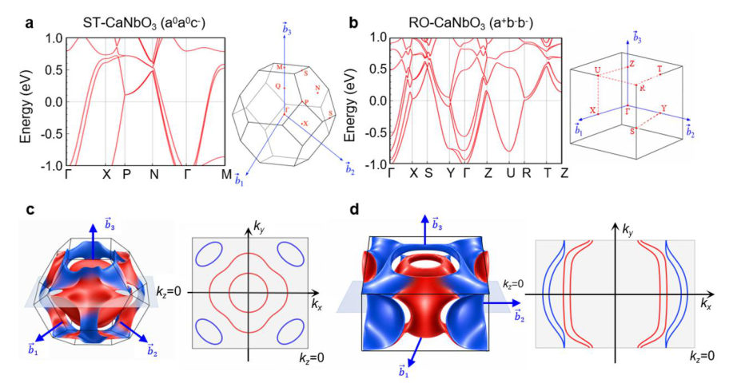
<figcaption class="paper-figure-caption"><b>Fig 4.</b> Fig. 4. Symmetry-protected electronic states and Fermi surfaces. (a) and (b) Electronic band structures and corresponding Brillouin zones of the strained tetragonal (ST-CaNbO3) a⁰a⁰c⁻ and relaxed orthorhombic (RO-CaNbO3) a⁺b⁻b⁻ phases, respectively. The strained phase hosts Dirac band crossings near the Fermi level protected by nonsymmorphic symmetry associated with the a⁰a⁰c⁻ OOR pattern. In contrast, the relaxed orthorhombic phase exhibits nodal-line-derived degeneracies stabilized by combined nonsymmorphic and mirror symmetries as highlighted by the red dashed lines. (c) and (d) Three-dimensional Fermi surfaces and representative kₓ–kᵧ cross- sectional contours at kz = 0 for B||z in the...</figcaption>
</figure>
</div>

<p><strong>Summary.</strong> This work demonstrates that oxygen octahedral rotations in $   ext{CaNbO}_3$ thin films act as a structural mechanism to control electronic topology. By comparing strained (tetragonal) and relaxed (orthorhombic) films, the authors link specific crystal symmetries to distinct electronic states, such as Dirac fermions or nodal lines. This establishes a powerful design principle for engineering topological materials in correlated oxides.</p>
<p><strong>Why it may be interesting.</strong> While focused on solid-state physics, the concept of using structural degrees of freedom (OORs) to engineer topological electronic states is highly relevant to designing quantum materials for quantum computing applications.</p>
<details>
<summary>Detailed structure</summary>
<p><strong>Main problem.</strong> The study addresses the challenge of stabilizing and characterizing symmetry-protected Dirac-related electronic states in complex, correlated oxide thin films.</p>
<p><strong>Main result.</strong> Oxygen octahedral rotations act as a structural design knob, allowing the engineering of distinct topological electronic states—Dirac crossings in the tetragonal phase and nodal lines in the orthorhombic phase—in $ ext{CaNbO}_3$.</p>
<p><strong>Method.</strong> The research combines epitaxial thin-film growth (PLD) with comprehensive transport measurements (magnetotransport, Hall effect) and first-principles DFT calculations.</p>
<p><strong>Model / system.</strong> The physical system is epitaxial $  ext{CaNbO}_3$ thin films grown on $ ext{SrTiO}_3$ substrates, where the electronic structure is controlled by strain-induced changes in oxygen octahedral rotations (OORs) between tetragonal and orthorhombic phases.</p>
<p><strong>Key observables.</strong> Ultrahigh electron mobility ($\mu \approx 138,000 	ext{ cm}^2	ext{V}^{-1}	ext{s}^{-1}$), Shubnikov-de Haas (SdH) oscillations, and the evolution of band crossings from nodal lines to Dirac points.</p>
<p><strong>Important parameters / regimes.</strong> Compressive strain, oxygen octahedral rotation patterns ($a^0a^0c^-$ vs $a^+b^-b^-$), and temperature/magnetic field regimes for quantum transport measurements.</p>
<p><strong>Assumptions / limitations.</strong> The electronic properties are primarily governed by the symmetry constraints imposed by the octahedral rotations, which dictate the topological nature of the band structure.</p>
<p><strong>Figures summary.</strong> Figures summarize the strain-driven evolution of OOR symmetry and associated electronic topology, showing structural characterization (RHEED, XRD), transport measurements ($
ho(T)$, mobility), and quantum oscillation data (SdH oscillations) for both strained and relaxed films.</p>
<p><strong>Paper structure.</strong> The paper follows a structure comparing two distinct structural phases (strained tetragonal vs. relaxed orthorhombic), using structural characterization to define the symmetry, followed by transport measurements to confirm the resulting electronic signatures (Dirac vs. nodal lines), all underpinned by DFT calculations.</p>
</details>
<details>
<summary>Abstract</summary>
<p>Symmetry-protected electronic states in correlated oxides offer a route to combining topology, lattice tunability, and many-body interactions, but creating such topological electronic states in complex oxides remains challenging. Here, we show that oxygen octahedral rotations provide a symmetry-control parameter for stabilizing Dirac-related electronic states in epitaxial CaNbO3 films. By comparing compressively strained tetragonal films and relaxed orthorhombic films, we demonstrate that distinct octahedral rotation patterns preserve nonsymmorphic symmetry and lead to distinct transport signatures consistent with Dirac-like electronic states. The films exhibit metallic transport with high mobility of 138,000 cm2 V-1 s-1, multichannel conduction, and Shubnikov-de Haas oscillations from small high-mobility Fermi pockets. Landau-fan diagram analysis indicates finite Berry-phase contributions, while first-principles calculations reveal a strain-driven evolution from nodal-line band crossings in the orthorhombic phase to Dirac-electron band features in the tetragonal phase. These results establish oxygen octahedral symmetry as a design knob for engineering topological electronic states in correlated perovskite oxides.</p>
</details>
<p><sub><a href="#top">↑ back to top</a></sub></p>

<p><a id="paper-2610.20434"></a></p>
<h3 id="universal-enhancement-of-the-pairing-gap-in-a-dilute-fermi-superfluid"><a href="http://arxiv.org/abs/2610.20434v1">Universal enhancement of the pairing gap in a dilute Fermi superfluid</a></h3>
<p><strong>Authors:</strong> Silas R. Beane, Roland C. Farrell, Cameron P. Shotwell<br>
<strong>Type:</strong> theory · <strong>Category:</strong> quantum gases · <strong>PDF:</strong> <a href="https://arxiv.org/pdf/2610.20434v1">https://arxiv.org/pdf/2610.20434v1</a><br>
<strong>Analysis basis:</strong> full PDF text, analyzed in chunks
<strong>Topic relevance:</strong> <code>Keldysh / 2PI / non-Gaussian methods</code> <strong>1/5</strong></p>
<div class="figure-strip-hint">↔ Scroll figures horizontally</div>
<div class="paper-figures-scroll">
<figure class="paper-figure-card">
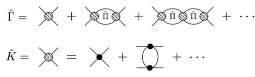
<figcaption class="paper-figure-caption"><b>Fig 1.</b> FIG. 1. The BSE for the pairing vertex ˆΓ. The shaded circle is the pairing-irreducible potential ˆK and the black circles are insertions of the contact interaction g0.</figcaption>
</figure>
<figure class="paper-figure-card">
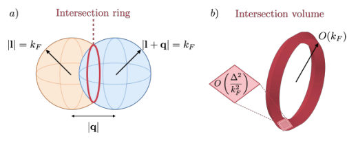
<figcaption class="paper-figure-caption"><b>Fig 2.</b> FIG. 2. The integration region that generates the linear-in-∆ term in the irreducible pairing potential is the intersection of two spherical shells, each with radius kF and thickness proportional to ∆/kF . a) For zero thickness and sphere sep- aration 0 &lt; |q| &lt; 2kF , the intersection is a ring with O(kF ) radius. b) Adding in the thickness, the intersection volume has a toroidal shape with cross-sectional area O(∆2/k2 F ) and volume O(∆2/kF ).</figcaption>
</figure>
<figure class="paper-figure-card">

<figcaption class="paper-figure-caption"><b>Fig 3.</b> FIG. 3. The solid blue line is the superfluid gap predicted from the weak coupling expansion including the c1,0 and c2,1 corrections to GMB. It is compared to GMB (dashed gray line), QMC with an effective range |re/a| ≈0.15 [31] (orange) and ultracold atom experiment [32] (green). The shaded blue region is a 68% uncertainty band on the trans-series predic- tion.</figcaption>
</figure>
<figure class="paper-figure-card">

<figcaption class="paper-figure-caption"><b>Fig 4.</b> FIG. 4. Upper: Diagrammatic expansion for the entries of the pairing vertex function ˆΓ. The shaded circle is the irreducible potential ˆK and the white triangle denotes an anomalous propagator. Lower: Diagrams contributing to the entries of ˆK.</figcaption>
</figure>
<figure class="paper-figure-card">

<figcaption class="paper-figure-caption"><b>Fig 5.</b> FIG. 5. Hugenholtz diagrams that contribute to the functional iW up to O(g2). Cutting these diagrams via functional differentiation is used to obtain the self-energy ˜Σ (one cut) and the pairing-irreducible potential ˜K (two cuts). The symmetry factors are S = {1/2, 1/8} for {W [1], W [2]}.</figcaption>
</figure>
</div>

<p><strong>Summary.</strong> This theoretical paper calculates the pairing gap in a dilute Fermi superfluid using a systematic trans-series expansion method. By including higher-order quantum corrections, the authors predict a substantial enhancement of the gap, which is crucial for accurate quantitative predictions in ultracold atomic systems. The methodology involves advanced diagrammatic techniques applied to the gap equation.</p>
<p><strong>Why it may be interesting.</strong> This work provides a highly quantitative, systematic theoretical framework for calculating superfluid properties in ultracold atomic gases, directly addressing the need for high-precision predictions beyond mean-field theory.</p>
<details>
<summary>Detailed structure</summary>
<p><strong>Main problem.</strong> The paper aims to determine the pairing gap in a dilute Fermi superfluid by systematically calculating higher-order corrections to the gap equation.</p>
<p><strong>Main result.</strong> The pairing gap is found to be a trans-series expansion, with a specific correction term showing a leading coefficient nearly 25 times larger than previously known coefficients.</p>
<p><strong>Method.</strong> The authors employ a systematic, diagrammatic weak-coupling expansion of the gap equation derived from the Goldstone pole condition, calculating coefficients order-by-order.</p>
<p><strong>Model / system.</strong> The system is a spin-1/2 Fermi gas interacting via a short-range attractive contact interaction. The analysis uses the gap equation derived from the pairing correlator, treating the gap as a trans-series in the interaction strength and the asymptotic gap.</p>
<p><strong>Key observables.</strong> Pairing gap ($\Delta$), dimensionless quantities ($\lambda$, $x$), and the trans-series coefficients ($c_{n,m}$).</p>
<p><strong>Important parameters / regimes.</strong> Interaction strength ($g_0$), Fermi momentum ($k_F$), and the density regime (intermediate densities).</p>
<p><strong>Assumptions / limitations.</strong> The calculation relies on diagrammatic perturbation theory and involves approximations when evaluating complex integrals in different momentum regimes.</p>
<p><strong>Figures summary.</strong> Figures compare the calculated trans-series prediction for the gap against results from the GMB theory, Quantum Monte Carlo (QMC) simulations, and experimental data from ultracold atoms.</p>
<p><strong>Paper structure.</strong> The paper progresses from establishing the gap equation via the pole condition, deriving the trans-series expansion coefficients through successive orders of approximation ($R[1], R[2], R[3]$), and finally evaluating complex integrals to obtain closed-form expressions for the gap enhancement.</p>
</details>
<details>
<summary>Abstract</summary>
<p>At zero temperature, a dilute Fermi gas with an attractive contact interaction forms a superfluid with gapped fermionic excitations. We show that the gap at weak coupling can be organized as a trans-series expansion in the interaction strength and the asymptotic Gor'kov-Melik-Barkhudarov gap. Low-energy virtual quasiparticles generate corrections that are linear in the gap with a leading coefficient nearly 25$\times$ larger than the other known coefficients. This substantially increases the gap at intermediate densities, highlighting that systematic corrections are crucial for quantitative predictions.</p>
</details>
<p><sub><a href="#top">↑ back to top</a></sub></p>
<h2 id="other-papers-19">Other papers (19)</h2>
<p><em>Papers from primary archives without highlighted authors or any topic match. Click to expand.</em></p>
<details>
<summary>Show other papers</summary>

<p><a id="paper-2610.19275"></a></p>
<h3 id="atomic-ironing-for-conformal-interfaces-in-freestanding-oxide-nanomembranes"><a href="http://arxiv.org/abs/2610.19275v1">Atomic ironing for conformal interfaces in freestanding oxide nanomembranes</a></h3>
<p><strong>Authors:</strong> Jeongkeun Song, Keaghan Knight, Keun-Yeol Park, Young-Hoon Kim, Tyler J. Sachs, Hu Miao, Jiaqiang Yan, Celesta S. Chang, Ambrose Seo, Ho Nyung Lee<br>
<strong>Type:</strong> experiment · <strong>Category:</strong> strongly correlated electrons · <strong>PDF:</strong> <a href="https://arxiv.org/pdf/2610.19275v1">https://arxiv.org/pdf/2610.19275v1</a><br>
<strong>Analysis basis:</strong> full PDF text, analyzed in chunks</p>
<div class="figure-strip-hint">↔ Scroll figures horizontally</div>
<div class="paper-figures-scroll">
<figure class="paper-figure-card">

<figcaption class="paper-figure-caption"><b>Fig 1.</b> Figure 1. Fabrication and transfer-induced structural evolution of freestanding STO membranes. (a-c) Schematic illustration of the sacrifical-layer lift-off process. (a) An epitaxial STO membrane (m-STO) grown on a water-soluble Sr4Al2O7 (SAO) sacrificial layer is released by dissolving SAO in water. (b) The membrane is then transferred onto a target substrate. (c) Thermal “ironing” us used to flatten the trasferred membrane. (d) Optical image of an m-STO transferred onto SiO2/Si. (e) X-ray diffraction patterns of the as-grown STO/SAO/STO heterostructure (gray) and m-STOs transferred onto SiO2/Si (blue) and Al2O3 (red). (f) X-ray rocking curves () of the as-transferred (AT) m-STO (blue)...</figcaption>
</figure>
<figure class="paper-figure-card">

<figcaption class="paper-figure-caption"><b>Fig 2.</b> Figure 2. Structural evolution upon thermal annealing. (a) XRD 2– scans of m-STO samples on SiO2/Si after thermal annealing from 300 to 700 °C. The asterisk denotes reflections from the SiO2/Si substrate. (b) Low-angle X-ray reflectivity (XRR) profiles of annealed m- STO, along with corresponding fitting results. (c) XRD rocking curves () of the as-transferred and annealed m-STO, showing progressive narrowing of the peak width with increasing annealing temperature. (d) Extracted membrane thickness (deff), surface/interface roughness (r), and full width at half maximum (FWHM) of the rocking curve as a function of annealing temperature. The reduction in roughness and FWHM indicates...</figcaption>
</figure>
<figure class="paper-figure-card">

<figcaption class="paper-figure-caption"><b>Fig 3.</b> Figure 3. Optical responses of m-STO following thermal ironing. (a) Schematic illustration of the optical transmission measurement geometry for an m-STO transferred onto a double- side polished sapphire substrate. Incident light (Ti) passes through the m-STO and sapphire substrate, while transmitted light (To) is collected from the opposite side. (b) Optical transmission spectra of as-transferred and annealed m-STO measured from 200 to 800 nm. The transmission becomes closer to that of single-crystalline STO with increasing the annealing temperature. (c) Extracted absorption coefficient () spectra of m-STO. (d) Tauc plots of (hv)0.5 versus photon energy for the as-transferred and 600 °C...</figcaption>
</figure>
<figure class="paper-figure-card">

<figcaption class="paper-figure-caption"><b>Fig 4.</b> Figure 4. Cross-sectional STEM analysis of annealing-induced structual enahancements in m-STO on SiO2/Si and at twisted m-STO/STO interfaces. (a) Low-magnification (top) and high-magnification (bottom) cross-sectional HAADF-STEM images of as-transferred m- STO on SiO2/Si viewed along the STO [110] zone axis, showing region-to-region contrast variations that suggest local membrane bending. (b) Low- magnification (top) and high- magnification (bottom) cross-sectional HAADF-STEM images of annealed m-STO on SiO2/Si. After annealing, the membrane exhibits a flatter morphology with uniform lattice contrast, indicating reduced local bending. (c) HAADF-STEM images and corresponding EDS elemental...</figcaption>
</figure>
</div>
<p><strong>Summary.</strong> This work demonstrates that structural defects introduced during the transfer of oxide nanomembranes, such as $    ext{SrTiO}_3$, can be systematically repaired using post-transfer thermal annealing, a process termed "atomic ironing." By monitoring structural metrics like mosaicity and roughness via XRD and XRR, the authors prove that annealing restores bulk-like crystalline quality, enabling the creation of atomically perfect interfaces necessary for advanced quantum oxide architectures.</p>
<p><strong>Why it may be interesting.</strong> The ability to engineer interfaces at the atomic scale via thermal treatment is crucial for realizing functional quantum devices, as structural perfection dictates the quality of electronic coupling in heterostructures.</p>
<details>
<summary>Detailed structure</summary>
<p><strong>Main problem.</strong> Transfer-induced structural disorders and imperfections in freestanding oxide nanomembranes degrade their intrinsic functionality, which is critical for advanced quantum device integration.</p>
<p><strong>Main result.</strong> Post-transfer thermal annealing, termed "atomic ironing," successfully restores structural uniformity, reduces lattice mosaicity, and creates atomically conformal interfaces in the oxide membranes.</p>
<p><strong>Method.</strong> The study uses a sacrificial-layer-based lift-off process to create freestanding $  ext{SrTiO}_3$ membranes, followed by systematic thermal annealing and characterization using XRD, XRR, and STEM.</p>
<p><strong>Model / system.</strong> The physical system is freestanding $   ext{SrTiO}_3$ ($    ext{m-STO}$) oxide nanomembranes, which are fabricated and tested on various substrates, including those used for twisted heterostructures.</p>
<p><strong>Key observables.</strong> XRD rocking curve FWHM, XRR interface roughness, lattice mosaicity, optical bandgap, and atomic-scale interface continuity (confirmed by STEM/EDS).</p>
<p><strong>Important parameters / regimes.</strong> Annealing temperature (ranging from $300^\circ	ext{C}$ to $700^\circ	ext{C}$), substrate type ($  ext{SiO}<em ext_twist="ext{twist">2/ ext{Si}$, $ ext{Al}_2   ext{O}_3$), and twist angle ($\phi</em>$).}</p>
<p><strong>Assumptions / limitations.</strong> The structural recovery achieved through annealing directly correlates with the restoration of the intrinsic, bulk-like optical functionality of the oxide material.</p>
<p><strong>Figures summary.</strong> Figures demonstrate the systematic narrowing of XRD rocking curves and reduction of XRR roughness with increasing annealing temperature, alongside STEM images showing membrane flattening and atomically flat interfaces in twisted structures.</p>
<p><strong>Paper structure.</strong> The paper follows a structure of problem identification (transfer damage) $
ightarrow$ methodology (lift-off, annealing, characterization) $
ightarrow$ systematic demonstration of structural recovery (XRD/XRR) $
ightarrow$ confirmation of functional recovery (optical/STEM) $
ightarrow$ establishing a general synthetic strategy.</p>
</details>
<details>
<summary>Abstract</summary>
<p>Atomically well-defined interfaces are essential for realizing functional interlayer coupling in stacked and twisted oxide heterostructures, yet transferred freestanding oxides can develop structural inhomogeneities, including local curvatures, interfacial voids, and incomplete contacts with substrates. Here, we demonstrate that these transfer-induced structural disorders and imperfections evolve substantially and can be suppressed by post-transfer thermal treatments, yielding bulk-like crystalline freestanding oxide nanomembranes. Using freestanding SrTiO3 membranes as a model system, we report a systematic understanding of the role of "atomic ironing" and the associated evolution of lattice mosaicity, interfacial roughness, and optical bandgap. We further demonstrate atomically bonded conformal interfaces in twisted SrTiO3 heterostructures, highlighting the importance of post-transfer thermal processes. These results establish a synthetic strategy to restore the structural integrity and intrinsic bulk-like functionality of freestanding oxide nanomembranes, enabling stacked, twisted, and heterogeneously integrated oxide architectures with atomically well-defined interfaces for emerging quantum functionalities.</p>
</details>
<p><sub><a href="#top">↑ back to top</a></sub></p>

<p><a id="paper-2610.20249"></a></p>
<h3 id="bulk-superconductivity-in-quintuple-layer-square-planar-nickelate-la6ni5o12"><a href="http://arxiv.org/abs/2610.20249v1">Bulk superconductivity in quintuple-layer square-planar nickelate La6Ni5O12</a></h3>
<p><strong>Authors:</strong> Mengzhu Shi, Mei Du, Hongyu Li, Zhiwei Wang, Zhengjie Wang, Ziji Xiang, Tao Wu, Xianhui Chen<br>
<strong>Type:</strong> experiment · <strong>Category:</strong> strongly correlated electrons · <strong>PDF:</strong> <a href="https://arxiv.org/pdf/2610.20249v1">https://arxiv.org/pdf/2610.20249v1</a><br>
<strong>Analysis basis:</strong> full PDF text, analyzed in chunks</p>
<div class="figure-strip-hint">↔ Scroll figures horizontally</div>
<div class="paper-figures-scroll">
<figure class="paper-figure-card">

<figcaption class="paper-figure-caption"><b>Fig 1.</b> Fig. 1 | Quintuple-layer nickelates with Ruddlesden-Popper and Square-Planar structure.</figcaption>
</figure>
<figure class="paper-figure-card">

<figcaption class="paper-figure-caption"><b>Fig 2.</b> Fig. 2 | Superconductivity in La6Ni5O12 realized within a limited hydrogen annealing</figcaption>
</figure>
<figure class="paper-figure-card">

<figcaption class="paper-figure-caption"><b>Fig 3.</b> Fig. 3 | Bulk magnetic signatures of superconductivity in the La6Ni5O12 crystals annealed</figcaption>
</figure>
<figure class="paper-figure-card">

<figcaption class="paper-figure-caption"><b>Fig 4.</b> Fig. 4 | Specific heat analysis and superconducting electronic contribution. a, Cp/T of</figcaption>
</figure>
</div>
<p><strong>Summary.</strong> This paper reports the successful synthesis and characterization of bulk superconducting nickelate $   ext{La}<em 12>6   ext{Ni}_5   ext{O}</em>$ at ambient pressure. Using multiple advanced measurements, the authors confirm a superconducting transition at $\sim 18$ K, establishing a crucial new platform for fundamental research into the mechanism of high-temperature superconductivity in this class of correlated materials.</p>
<p><strong>Why it may be interesting.</strong> This work is highly relevant as it tackles the fundamental problem of high-Tc superconductivity in a correlated electron system, providing a new, accessible platform for studying mechanisms analogous to those in cuprates.</p>
<details>
<summary>Detailed structure</summary>
<p><strong>Main problem.</strong> The primary challenge was realizing and understanding bulk superconductivity in nickelate superconductors, which are promising analogs to cuprates but have historically been limited to thin films or high-pressure conditions.</p>
<p><strong>Main result.</strong> The authors successfully reported the first realization of bulk superconductivity at ambient pressure in the quintuple-layer square-planar nickelate La6Ni5O12, exhibiting an onset transition temperature of approximately 18 K.</p>
<p><strong>Method.</strong> The study employed a combination of synthesis techniques (topotactic reaction from a precursor) and multiple characterization methods, including transport (resistivity), magnetic (magnetization, torque), and thermodynamic (specific heat) measurements.</p>
<p><strong>Model / system.</strong> The physical system is the quintuple-layer square-planar nickelate La6Ni5O12. The research focuses on the electronic and superconducting properties of this material, which is structurally related to high-Tc cuprates.</p>
<p><strong>Key observables.</strong> Superconducting onset transition temperature (Tc $\approx 18$ K), superconducting volume fraction ($\approx 25\%$), upper critical magnetic field ($\mu_0H_{c2}$), and the superconducting energy gap ($\Delta = 3.6$ meV).</p>
<p><strong>Important parameters / regimes.</strong> Ambient pressure, annealing temperatures ($310^\circ	ext{C}$ to $320^\circ	ext{C}$), and oxygen stoichiometry.</p>
<p><strong>Assumptions / limitations.</strong> The superconducting state is highly sensitive to oxygen stoichiometry and annealing conditions, suggesting that precise control over the crystal structure is crucial for high-$T_c$ superconductivity.</p>
<p><strong>Figures summary.</strong> Figures likely show structural evidence (XRD, STEM) confirming the phase transition, and plots detailing the temperature and field dependence of resistivity, magnetization, and specific heat anomalies.</p>
<p><strong>Paper structure.</strong> The paper follows a structure of establishing the scientific gap (lack of bulk ambient-pressure samples), detailing the synthesis and structural characterization of the material, and then presenting multiple, consistent experimental measurements (transport, magnetic, specific heat) to confirm the superconducting state and characterize its parameters.</p>
</details>
<details>
<summary>Abstract</summary>
<p>Nickelate superconductors, sharing a similar electronic environment with cuprate superconductors, offer a promising platform for unraveling the mechanism of high-temperature superconductivity. However, the realization of superconductivity in these systems has so far been restricted to thin films or bulk samples under high-pressure. This limits the applicability of various experimental probes to study the mechanism of superconductivity, and hinders the potential application of the nickelate superconductors. Exploring bulk superconductivity at ambient pressure is therefore essential to understand its origin and enable broader experimental research. Here, we report the realization of bulk superconductivity at ambient-pressure in quintuple-layer square-planar (SP) nickelate La6Ni5O12. The SP phase is obtained by performing topotactic reaction on the quintuple-layer Ruddlesden-Popper (RP) compound La6Ni5O16. Optimized reduction condition endows La6Ni5O12 with a superconducting state that exhibits onset transition temperature of ~ 18 K, as verified by both zero resistance and diamagnetic shielding effect. Pronounced hysteresis loops revealed by magnetization and torque magnetometry demonstrate the occurrence of vortex pinning. Specific heat measurements on a polycrystalline pellet of La6Ni5O12 reveal a clear superconducting transition at ~18 K and a superconducting volume fraction of ~ 25%, which strongly supports the presence of bulk superconductivity. Our results establish an unprecedented bulk sample platform for investigating superconductivity in nickelates at ambient pressure, which paves the way for further experimental studies into the superconducting mechanism.</p>
</details>
<p><sub><a href="#top">↑ back to top</a></sub></p>

<p><a id="paper-2610.20368"></a></p>
<h3 id="degeneracy-graph-determinants-and-higher-dimensional-young-diagrams"><a href="http://arxiv.org/abs/2610.20368v1">Degeneracy graph determinants and higher-dimensional Young diagrams</a></h3>
<p><strong>Authors:</strong> Sanjaye Ramgoolam, Michał Studziński<br>
<strong>Type:</strong> theory · <strong>Category:</strong> other · <strong>PDF:</strong> <a href="https://arxiv.org/pdf/2610.20368v1">https://arxiv.org/pdf/2610.20368v1</a><br>
<strong>Analysis basis:</strong> full PDF text, analyzed in chunks</p>
<div class="figure-strip-hint">↔ Scroll figures horizontally</div>
<div class="paper-figures-scroll">
<figure class="paper-figure-card">

<figcaption class="paper-figure-caption"><b>Fig 1.</b> Figure 2: The graph with D = (2, 4), p1 = [2, 2]. Layers are drawn as columns from left to right, with labels increasing upwards.</figcaption>
</figure>
<figure class="paper-figure-card">

<figcaption class="paper-figure-caption"><b>Fig 2.</b> Figure 4: The graph Γ of Remark 2.9 and its final-layer-excised graphs. The dashed box encloses the only set of siblings in V3 with more than one element; the Newton expansion acts there. Γ[1] is the graph of Figure 3, so the L = 3 example reduces to the L = 2 example, which reduces in turn to the one-variable Newton–Vandermonde case.</figcaption>
</figure>
<figure class="paper-figure-card">

<figcaption class="paper-figure-caption"><b>Fig 3.</b> Figure 5: Left: the graph with D = (2, 4, 7), p1 = [2, 2], c2 = [2, 1, 2, 2]. Right: the Young diagrams of the two nodes of V1, with cubes corresponding to the points (d2, d3). Node 1 has children with 2 and 1 children, so λ(1) = (2, 1); node 2 has children with 2 and 2 children, so λ(2) = (2, 2). The intersection has 3 cubes, the exponent of x(1) 2 −x(1) 1 .</figcaption>
</figure>
<figure class="paper-figure-card">

<figcaption class="paper-figure-caption"><b>Fig 4.</b> Figure 6: The three-dimensional Young diagrams of the two nodes of V1 for D = (2, 4, 7, 12), p1 = [2, 2], c2 = [2, 1, 2, 2], c3 = [2, 3, 1, 2, 2, 1, 1], built by stacking the two- dimensional Young diagrams of their children (3.9). The floor coordinates are d3 and d4, the height is d2. The bottom layer (blue) consists of the floor points covered by at least one child, the second layer (orange) of those covered by two.</figcaption>
</figure>
<figure class="paper-figure-card">

<figcaption class="paper-figure-caption"><b>Fig 5.</b> Figure 7: The overlap of the two three-dimensional Young diagrams of Figure 6. Below each diagram is its array of heights (rows d3 = 1, 2, columns d4 = 1, 2, 3). The heights of the intersection are the entrywise minima, and its volume 5 is the exponent of x(1) 2 −x(1) 1 .</figcaption>
</figure>
</div>
<p><strong>Summary.</strong> This theoretical paper proves a general factorized formula for the determinant associated with a basis of monomials in a commutative semisimple algebra defined by a degeneracy graph. The proof is highly technical, relying on graph analogues of Newton polynomials and establishing a block triangular structure for the evaluation matrix. The result connects algebraic properties to combinatorial invariants, specifically overlap volumes of higher-dimensional Young diagrams.</p>
<p><strong>Why it may be interesting.</strong> While highly abstract, the connection between algebraic structures (CASS), graph theory, and combinatorial objects (Young diagrams) provides powerful mathematical tools applicable to quantum field theory and representation theory, which underpins many advanced quantum physics models.</p>
<details>
<summary>Detailed structure</summary>
<p><strong>Main problem.</strong> The paper aims to prove a factorized formula for the determinant of an evaluation matrix associated with a basis of monomials in a commutative semisimple algebra (CASS). This relates the algebraic structure defined by a degeneracy graph to a concrete determinant formula.</p>
<p><strong>Main result.</strong> The conjectured factorized formula for the determinant is proven for any number of generators, and the structure of the determinant is shown to be governed by the overlap volumes of higher-dimensional Young diagrams attached to the graph nodes.</p>
<p><strong>Method.</strong> The proof utilizes graph analogues of Newton polynomials and establishes that the evaluation matrix is block triangular through strategic reordering of rows and columns. The final result is obtained via induction on the number of layers.</p>
<p><strong>Model / system.</strong> The context is a general CASS algebra generated by operators $C_1, \dots, C_L$, which arises in physical settings like the study of $\mathcal{N}=4$ super Yang-Mills theory (AdS/CFT) or Walled Brauer algebras. The structure is encoded by a 'degeneracy graph.'</p>
<p><strong>Key observables.</strong> The determinant of the evaluation matrix, which is conjectured and then proven to follow a product formula related to Young diagram overlap volumes.</p>
<p><strong>Important parameters / regimes.</strong> The number of generators ($L$), the structure of the degeneracy graph, and the eigenvalues associated with the graph nodes.</p>
<p><strong>Assumptions / limitations.</strong> The proof relies on the ability to transform the evaluation matrix into a block triangular form via specific row/column permutations, and the initial conjecture regarding the determinant's factorized form.</p>
<p><strong>Figures summary.</strong> Figures illustrate the graph structure ($\Gamma$), showing nodes, parents, and children, and the mathematical constructions of the graph Newton polynomials and the resulting block-triangular matrix structure.</p>
<p><strong>Paper structure.</strong> The paper builds from establishing the basis property of the graph monomials, introduces graph analogues of Newton polynomials, proves the determinant formula using induction on the graph layers, and finally derives the explicit recursive inversion of the evaluation matrix.</p>
</details>
<details>
<summary>Abstract</summary>
<p>Kemp and Ramgoolam proposed a basis of monomials for a commutative semisimple algebra with generators \(C_1,\ldots, C_L\), constructed from a degeneracy graph which records how the eigenspaces of \( C_1\) are successively split by \( C_2,\ldots, C_L\). They showed that the basis property is equivalent to the non-vanishing of the determinant of the matrix of values of these monomials on the projector basis, and conjectured a factorised formula for this determinant, as a product of powers of eigenvalue differences. We prove this formula for any number of generators. The proof uses graph analogues of Newton polynomials. Their evaluation matrix is not triangular in general, but expanding the rows of the children of each node of the penultimate layer in a Newton basis of their eigenvalues makes it block triangular, with diagonal blocks given by smaller degeneracy graphs in which the final layer is removed. The formula then follows by induction on the number of layers. We show that the exponents in the determinant are overlap volumes of higher-dimensional Young diagrams attached to the nodes of the graph: intervals, ordinary Young diagrams, plane partitions and their higher analogues. Finally, the block triangular structure gives an explicit recursive inversion of the evaluation matrix, expressing the projectors in the monomial basis.</p>
</details>
<p><sub><a href="#top">↑ back to top</a></sub></p>

<p><a id="paper-2610.20569"></a></p>
<h3 id="droplets-obstruct-onsager-type-solutions-of-the-ising-model-in-a-magnetic-field"><a href="http://arxiv.org/abs/2610.20569v1">Droplets obstruct Onsager-type solutions of the Ising model in a magnetic field</a></h3>
<p><strong>Authors:</strong> Ran Luo, Jiahua Tian<br>
<strong>Type:</strong> theory · <strong>Category:</strong> statistical mechanics · <strong>PDF:</strong> <a href="https://arxiv.org/pdf/2610.20569v1">https://arxiv.org/pdf/2610.20569v1</a><br>
<strong>Analysis basis:</strong> full PDF text, analyzed in chunks</p>
<div class="figure-strip-hint">↔ Scroll figures horizontally</div>
<div class="paper-figures-scroll">
<figure class="paper-figure-card">

<figcaption class="paper-figure-caption"><b>Fig 1.</b> Low-resolution page preview, page 2</figcaption>
</figure>
<figure class="paper-figure-card">

<figcaption class="paper-figure-caption"><b>Fig 2.</b> Low-resolution page preview, page 3</figcaption>
</figure>
<figure class="paper-figure-card">

<figcaption class="paper-figure-caption"><b>Fig 3.</b> Low-resolution page preview, page 4</figcaption>
</figure>
<figure class="paper-figure-card">

<figcaption class="paper-figure-caption"><b>Fig 4.</b> Low-resolution page preview, page 5</figcaption>
</figure>
<figure class="paper-figure-card">

<figcaption class="paper-figure-caption"><b>Fig 5.</b> Low-resolution page preview, page 6</figcaption>
</figure>
</div>
<p><strong>Summary.</strong> This theoretical work proves that the exact free energy of the 2D Ising model in a magnetic field cannot be expressed by simple closed forms or functions satisfying algebraic differential equations. The proof hinges on analyzing the structure of the low-temperature expansion coefficients, showing they grow too rapidly to conform to known algebraic constraints.</p>
<p><strong>Why it may be interesting.</strong> While focused on classical statistical mechanics, the techniques used—analyzing the transcendence of partition functions—are highly relevant to understanding the complexity of quantum many-body systems where exact solutions are rare.</p>
<details>
<summary>Detailed structure</summary>
<p><strong>Main problem.</strong> To determine if the free energy of the 2D Ising model in a magnetic field can be described by 'Onsager-type solutions' or any function obeying an algebraic differential equation in the coupling constant.</p>
<p><strong>Main result.</strong> The free energy is proven to be differentially transcendental in the coupling constant at almost every fixed magnetic field, excluding Onsager-type solutions.</p>
<p><strong>Method.</strong> The analysis uses low-temperature expansions organized by 'droplets' and compares the growth rate of coefficients derived from the partition function against the known bounds for differentially algebraic functions.</p>
<p><strong>Model / system.</strong> The study concerns the 2D Ising model on the square lattice ($\mathbb{Z}^2$) with a Hamiltonian including an exchange coupling ($J$) and a magnetic field ($h$). The analysis focuses on the free energy per site, $f$, and the pressure, $p$.</p>
<p><strong>Key observables.</strong> The free energy per site ($f$) and the pressure ($p$) are the key observables, analyzed via their low-temperature expansion coefficients ($L_m$).</p>
<p><strong>Important parameters / regimes.</strong> The dimensionless couplings $K = J/(k_BT)$ and $H = h/(k_BT)$ are the primary parameters. The result holds for $d \ge 2$ and for fields $H$ outside a countable set.</p>
<p><strong>Assumptions / limitations.</strong> The argument relies on comparing the derived growth rate of coefficients (related to droplet geometry) against the established bounds for differential algebraicity, assuming the model is analytic in the coupling.</p>
<p><strong>Figures summary.</strong> Figure 1 illustrates the relationship between droplet boundary size and volume. Figure 2 shows the coefficients $[z^n]L_m$ for $m=8$, highlighting the 'integer band' contribution from single droplets.</p>
<p><strong>Paper structure.</strong> The paper develops the low-temperature expansion for the pressure, analyzes the structure of the coefficients $L_m$ using mixed difference operators, and then applies techniques from differential algebra (comparing growth rates) to show that the resulting function cannot satisfy an algebraic differential equation.</p>
</details>
<details>
<summary>Abstract</summary>
<p>Onsager solved the two-dimensional Ising model in zero field, but no solution is known in a magnetic field. We prove that in any dimension $d\ge2$, at every fixed dimensionless field outside a countable set, the free energy obeys no algebraic differential equation in the coupling, even locally. The obstruction arises from droplet geometry: the maximal droplet volume grows as the $d/(d-1)$ power of its boundary size, while an integer band in the pressure coefficients protects the extremal contributions against cancellation. Our result excludes Onsager-type solutions and closed forms in elliptic, hypergeometric, or Painlevé functions of the coupling at these fields.</p>
</details>
<p><sub><a href="#top">↑ back to top</a></sub></p>

<p><a id="paper-2610.19112"></a></p>
<h3 id="engineering-correlated-transparent-conductors-via-metal-insulator-transition-proximity"><a href="http://arxiv.org/abs/2610.19112v1">Engineering Correlated Transparent Conductors via Metal-Insulator Transition Proximity</a></h3>
<p><strong>Authors:</strong> Amit Cohen, Nofar Tuval, Maria Baskin, Tien-Lin Lee, Tom Tiwald, Scott A. Chambers, Sophie D. Beck, Lior Kornblum<br>
<strong>Type:</strong> both · <strong>Category:</strong> strongly correlated electrons · <strong>PDF:</strong> <a href="https://arxiv.org/pdf/2610.19112v1">https://arxiv.org/pdf/2610.19112v1</a><br>
<strong>Analysis basis:</strong> full PDF text, analyzed in chunks</p>
<div class="figure-strip-hint">↔ Scroll figures horizontally</div>
<div class="paper-figures-scroll">
<figure class="paper-figure-card">

<figcaption class="paper-figure-caption"><b>Fig 1.</b> Figure 1. Structural characterization of STVO thin films. (a) High-resolution XRD patterns showing the sharp LSAT (002) substrate reflection at ∼47∘ and the composition-dependent STVO (002) film reflections, with thickness fringes observed for all compositions. (b) Unit cell volume as a function of Ti content. (c) Representative AFM topography of the 20% Ti film.</figcaption>
</figure>
<figure class="paper-figure-card">

<figcaption class="paper-figure-caption"><b>Fig 2.</b> Figure 2. Optical properties of STVO thin films as a function of Ti content. (a) Free-standing film transmittance derived for a 25 nm film from ellipsometry-derived optical constants using an incoherent multiple-reflection model. The vertical dashed lines represent the Si solar cell operating window. (b,c) Experimentally derived optical conductivity by recasting the ellipsometry-fitted dielectric functions. The low-energy Drude response in (b) is extrapolated from the measured spectral range shown in (c). (d) Evolution of the O 2p → 3d transition energy (denoted as an effective Eg for convenience, circles), extracted by Tauc analysis, and screened plasma edge (ωp</figcaption>
</figure>
<figure class="paper-figure-card">

<figcaption class="paper-figure-caption"><b>Fig 3.</b> Figure 3. Electrical transport properties of STVO thin films. (a) Temperature-dependent resistivity for all compositions, (triangles at 300 K indicate the resistivity value as calculated from the Drude extrapolation of the optical conductivity). Zoomed-in views of the (b) 20% Ti sample showing metallicity across all temperatures and (c) 30% Ti sample where a thermal MIT is observed at ~150 K. To quantify the combined impact of the opposing optical and transport trends, and to assess the applicability of the STVO series as a TCO, we apply the Haacke figure of merit (FOM),[40] ϕ = T10/RS, where T is the transmittance and RS is the sheet resistance. Because each Ti composition modifies the...</figcaption>
</figure>
<figure class="paper-figure-card">

<figcaption class="paper-figure-caption"><b>Fig 4.</b> Figure 4. Composition and thickness dependence of the FOM for metallic STVO thin films. (a) Weighted average transmittance (Tavg), and sheet resistance (RS), evaluated at a representative nominal film thickness of 25 nm. Tavg is averaged over the silicon photovoltaic spectral window (350–1200 nm) using the AM1.5g solar spectrum as the weighting function. (b) Corresponding FOM, ϕ = Tavg</figcaption>
</figure>
<figure class="paper-figure-card">

<figcaption class="paper-figure-caption"><b>Fig 5.</b> Figure 5. HAXPES evolution of the electronic structure across the STVO MIT. (a) Valence band spectra, dashed line denotes EF. (b) Ti 2p core-level spectra. Dashed curve: SrNb0.01Ti0.99O3 (Nb:STO) reference.[47] (c), (d) Expanded views of the Ti 2p low- and high BE features, respectively. (e) V 2p core- level spectra. (f,g) Expanded views of the V 2p low- and high BE features, respectively. The arrow in (f) marks the shoulder at ~514.5 eV, attributed to charge-transfer processes involving the QP and Hubbard- band states.</figcaption>
</figure>
</div>
<p><strong>Summary.</strong> This work demonstrates that the transparency-conductivity trade-off in correlated oxides can be managed by engineering the material composition near a Metal-Insulator Transition. Using STVO films, the authors show that tuning the electronic filling allows for systematic optimization, establishing MIT proximity as a powerful design strategy for next-generation transparent conductors.</p>
<p><strong>Why it may be interesting.</strong> The concept of using proximity to a quantum critical point (like an MIT) as a design principle is highly relevant to understanding and engineering correlated quantum materials, bridging fundamental physics with device engineering.</p>
<details>
<summary>Detailed structure</summary>
<p><strong>Main problem.</strong> The paper addresses the fundamental trade-off between achieving high electrical conductivity and maintaining high optical transparency in transparent conductors.</p>
<p><strong>Main result.</strong> Proximity to a Metal-Insulator Transition (MIT) serves as a general, tunable design principle to systematically engineer the balance between transparency and conductivity in correlated-oxide materials.</p>
<p><strong>Method.</strong> The study combines epitaxial thin-film growth (MBE) with advanced characterization techniques, including optical spectroscopy (ellipsometry) and electrical transport measurements.</p>
<p><strong>Model / system.</strong> The model system is epitaxial Ti-substituted SrVO3 (STVO) thin films. The electronic behavior is analyzed by tuning the Ti concentration, which drives the material across a composition-dependent MIT.</p>
<p><strong>Key observables.</strong> Optical transparency (spectral window), electrical conductivity ($\sigma_1(\omega)$), plasma frequency ($\omega_p^*$), and the Haacke Figure of Merit ($\phi$).</p>
<p><strong>Important parameters / regimes.</strong> The composition ($x$ in $   ext{SrTi}<em 1-x>x ext{V}</em>_3$), the proximity to the MIT, and film thickness are critical tuning parameters.}    ext{O</p>
<p><strong>Assumptions / limitations.</strong> The analysis relies on the Haacke Figure of Merit as an optimization metric and uses models like the Mayadas-Shatzkes formalism for thickness effects.</p>
<p><strong>Figures summary.</strong> Figures illustrate structural characterization (XRD), optical properties (transmittance vs. Ti content, $\sigma_1(\omega)$), and electrical transport (resistivity vs. T, FOM vs. Ti content), pinpointing the optimal composition.</p>
<p><strong>Paper structure.</strong> The paper systematically investigates the structural quality, then the optical tuning (band gap/plasma edge shifts), followed by the electrical transport analysis near the MIT, culminating in the identification of the optimal material composition via the FOM.</p>
</details>
<details>
<summary>Abstract</summary>
<p>Transparent conductors are key functional materials in modern optoelectronic devices. Their performance is governed by an inherent trade-off between optical transparency and electrical conductivity. Correlated metallic oxides offer an attractive workaround to this compromise, where narrow partially-filled bands provide high conductivity, while the absence of visible-range transitions enables optical transparency. Despite this promise, transparency and conductivity remain coupled through carrier density and electronic coherence. Here, we use proximity to a metal-insulator transition (MIT) as a design principle for engineering this balance in correlated-oxide transparent conductors. Epitaxial Ti-substituted $SrVO_3$ films serve as a model platform where the optical window and metallicity are tuned simultaneously. We demonstrate and explain a systematic broadening of the optical window to regimes relevant for silicon photovoltaics. This gain is counterbalanced by carrier depletion and disorder, which drive the loss of coherent transport near the composition-driven MIT. A Haacke figure-of-merit analysis identifies the optimal composition range near the MIT, where the loss of metallic transport is accompanied by persistent near-Fermi-level spectral weight, indicating disorder-assisted localization together with correlation-driven spectral-weight redistribution. These findings establish proximity to an MIT as a general materials-design strategy, using electronic filling as a tuning knob for the transparency-conductivity balance in correlated-oxide transparent conductors.</p>
</details>
<p><sub><a href="#top">↑ back to top</a></sub></p>

<p><a id="paper-2610.19334"></a></p>
<h3 id="evidence-for-hidden-order-and-its-potential-correlation-with-electron-hole-asymmetry-in-iridate-superlattices"><a href="http://arxiv.org/abs/2610.19334v1">Evidence for hidden order and its potential correlation with electron-hole asymmetry in iridate superlattices</a></h3>
<p><strong>Authors:</strong> Zhihan Qiao, Han Zhang, Hangtian Wang, Deyang Li, Haiyang Zhang, Enyang Men, Junlei Jiang, Jingxin Chen, Yizhou Liu, Sang-Youn Park, Xiangnan Xie, MingLiang Tian, Haifeng Du, Ning Hao, Lin Hao<br>
<strong>Type:</strong> experiment · <strong>Category:</strong> strongly correlated electrons · <strong>PDF:</strong> <a href="https://arxiv.org/pdf/2610.19334v1">https://arxiv.org/pdf/2610.19334v1</a><br>
<strong>Analysis basis:</strong> full PDF text, analyzed in chunks</p>
<div class="figure-strip-hint">↔ Scroll figures horizontally</div>
<div class="paper-figures-scroll">
<figure class="paper-figure-card">

<figcaption class="paper-figure-caption"><b>Fig 1.</b> Fig. 1. Electron-hole asymmetry in iridates. (a) Temperature-dependent normalized</figcaption>
</figure>
<figure class="paper-figure-card">

<figcaption class="paper-figure-caption"><b>Fig 2.</b> Fig. 2. Characterization of the octahedral rotation pattern. (a) SXRD around the (0.5</figcaption>
</figure>
<figure class="paper-figure-card">

<figcaption class="paper-figure-caption"><b>Fig 3.</b> Fig. 3. Hidden order in hole-doped iridates. (a) Energy scan at the (0.5 0.5 1) magnetic</figcaption>
</figure>
<figure class="paper-figure-card">

<figcaption class="paper-figure-caption"><b>Fig 4.</b> Fig. 4. Unconventional modulation of magnetic coherence upon carrier doping.</figcaption>
</figure>
</div>
<p><strong>Summary.</strong> This experimental study explores hidden order in doped iridate superlattices, finding a pronounced electron-hole asymmetry in the coupling between insulating and antiferromagnetic states. By combining structural, magnetic, and transport measurements, the authors pinpoint a unique hidden order signature that appears only in the hole-doped regime, suggesting these materials are excellent platforms for studying unconventional quantum ordering.</p>
<p><strong>Why it may be interesting.</strong> The investigation into hidden order and its coupling to doping asymmetry in a strongly correlated platform like iridates provides a rich playground for understanding emergent quantum phases beyond simple magnetic or charge ordering.</p>
<details>
<summary>Detailed structure</summary>
<p><strong>Main problem.</strong> The paper investigates the nature of 'hidden order' in doped iridate superlattices and its correlation with observed electron-hole asymmetry.</p>
<p><strong>Main result.</strong> The study reveals evidence of a hidden order that emerges exclusively in the hole-doped regime, which is distinct from the conventional antiferromagnetic state and is not solely attributable to structural distortions.</p>
<p><strong>Method.</strong> The research combines multiple experimental techniques, including Synchrotron X-ray Diffraction (SXRD) for structural analysis, magnetic characterization (REXS, SQUID), and transport measurements across varying doping levels.</p>
<p><strong>Model / system.</strong> The physical system is doped iridate superlattices, which are quasi-2D materials exhibiting strong spin-orbit coupling and Mott physics, allowing for the study of correlated electron phenomena.</p>
<p><strong>Key observables.</strong> Insulating strength (charge gap $\Delta$), Néel temperature ($T_N$), magnetic scattering intensity ($\sqrt{I_M}$), and magnetic coherence lengths ($\xi_{||p}$, $\xi_{oop}$).</p>
<p><strong>Important parameters / regimes.</strong> Electron-doping vs. hole-doping regimes, temperature, and the degree of lattice distortion (octahedral rotation/tilting).</p>
<p><strong>Assumptions / limitations.</strong> The analysis assumes that structural distortions and magnetic order parameters can be systematically correlated to diagnose the underlying electronic ground state.</p>
<p><strong>Figures summary.</strong> Figures illustrate the electron-hole asymmetry in transport properties, structural changes via SXRD, the emergence of hidden order signals in hole-doped samples, and the doping dependence of magnetic coherence lengths.</p>
<p><strong>Paper structure.</strong> The paper systematically analyzes the doping dependence of electronic transport ($\Delta$ vs. $T_N$), structural distortions (ruling out structural origin for asymmetry), and finally uses magnetic measurements to pinpoint the hidden order signature unique to the hole-doped regime.</p>
</details>
<details>
<summary>Abstract</summary>
<p>Hidden order refers to an order that shapes the properties of quantum materials yet remains difficult to identify. Here we report signatures of a hidden order in doped iridate superlattices through an unexpected electron-hole asymmetry in the coupling between the insulating state and the antiferromagnetic (AFM) state. While carrier doping suppresses both states, they remain coupled in the electron-doped regime but decouple in the hole-doped regime. Structural analysis rules out octahedral rotation and tilting as the dominant origin of this asymmetry. Instead, magnetic characterization reveals evidences of a hidden order that only appears in the hole-doped regime. This hidden order emerges above TN and is closely associated with the AFM state, coinciding with an exceptionally strong magnetic scattering intensity and an anomalously robust magnetic coherence. Our results highlight that hole-doped iridates can be a promising platform for exploring hidden and unconventional ordering phenomena in spin-orbit-entangled quantum materials.</p>
</details>
<p><sub><a href="#top">↑ back to top</a></sub></p>

<p><a id="paper-2610.20159"></a></p>
<h3 id="exact-analytical-spectra-of-an-effective-field-modified-radial-schrodinger-equation-by-the-nikiforov-uvarov-method"><a href="http://arxiv.org/abs/2610.20159v1">Exact analytical spectra of an effective field-modified radial Schrödinger equation by the Nikiforov--Uvarov method</a></h3>
<p><strong>Authors:</strong> Tunde Joseph Osunmusanmi, Berihu Teklu<br>
<strong>Type:</strong> theory · <strong>Category:</strong> other · <strong>PDF:</strong> <a href="https://arxiv.org/pdf/2610.20159v1">https://arxiv.org/pdf/2610.20159v1</a><br>
<strong>Analysis basis:</strong> full PDF text, analyzed in chunks</p>
<div class="figure-strip-hint">↔ Scroll figures horizontally</div>
<div class="paper-figures-scroll">
<figure class="paper-figure-card">

<figcaption class="paper-figure-caption"><b>Fig 1.</b> Figure 1: Effective field-modified central potentials V (r), Eq. (3), for θ = 0◦, 20◦, 40◦, 60◦, 80◦, with the θ-independent levels ´ξ (dashed). (a) Kratzer-type, Eq. (11), with qE = 0.2, A = 1, G = 1/2; levels for l = 0, k = 0–3. (b) Pseudoharmonic-type, Eq. (27), with qE = 1, ω = 1, G = 1/2, c0 = 0; levels for l = 0, k = 0–4. (c) Hulth´en-type with repulsive core, Eq. (42), with qE = 0.2, V0 = 1/2, V1 = 1/20, δ = 1/4; the three s-wave levels. Atomic units.</figcaption>
</figure>
<figure class="paper-figure-card">

<figcaption class="paper-figure-caption"><b>Fig 2.</b> Figure 2: Expectation value ⟨V ⟩k of the Kratzer-type field-modified central potential, Eq. (25), versus θ for l = 0 and k = 0–3, with qE = 0.2, A = 1, G = 1/2.</figcaption>
</figure>
<figure class="paper-figure-card">

<figcaption class="paper-figure-caption"><b>Fig 3.</b> Figure 3: Normalized eigenfunctions for l = 0. (a) Kratzer-type, Eq. (18), with A = 1, G = 1/2, k = 0–3. (b) Hulth´en-type with repulsive core, Eq. (51), with V0 = 1/2, V1 = 1/20, δ = 1/4, for the three bound states n = 0, 1, 2. (c) Pseudoharmonic-type, Eq. (34), with ω = 1, G = 1/2, k = 0–3. The horizontal line marks ψ = 0; the state with label k (or n) has k (or n) nodes. The eigenfunctions are independent of θ.</figcaption>
</figure>
</div>
<p><strong>Summary.</strong> This paper derives exact analytical solutions for the energy spectrum of a charged particle in combined electric and magnetic fields by solving the effective radial Schrödinger equation. It successfully employs the Nikiforov–Uvarov method for three different potential forms, showing that while the potential itself depends on the field orientation, the resulting energy eigenvalues are independent of the field strength and angle.</p>
<p><strong>Why it may be interesting.</strong> The ability to solve complex, field-modified radial equations analytically using established methods like NU provides exact benchmarks for numerical simulations in atomic and molecular physics.</p>
<details>
<summary>Detailed structure</summary>
<p><strong>Main problem.</strong> To find the exact analytical spectra of an effective field-modified radial Schrödinger equation for a charged spinless particle in combined static electric and magnetic fields.</p>
<p><strong>Main result.</strong> The equation can be solved exactly using the Nikiforov–Uvarov method for three distinct potential types, yielding closed-form spectra and eigenfunctions.</p>
<p><strong>Method.</strong> The Nikiforov–Uvarov (NU) method is employed to solve the radial Schrödinger equation, which is compared against the Tridiagonal Representation Approach (TRA).</p>
<p><strong>Model / system.</strong> The model describes a charged spinless particle moving in collinear static electric (E) and magnetic (B) fields. The effective potential $V(r)$ incorporates these fields alongside a prescribed central potential $   ilde{V}(r)$.</p>
<p><strong>Key observables.</strong> Energy spectrum ($ ilde{\xi}$), normalized eigenfunctions (in terms of Laguerre or Jacobi polynomials), potential minimum location ($r_{\min}$), and radial expectation values ($\langle V 
angle_k$).</p>
<p><strong>Important parameters / regimes.</strong> The electric field strength ($E$), magnetic field strength ($B$), and the angular orientation ($    heta$).</p>
<p><strong>Assumptions / limitations.</strong> The analysis assumes a weak-magnetic-field condition and utilizes an angular projection ($\cos	heta 	o C$).</p>
<p><strong>Figures summary.</strong> Figures illustrate the effective field-modified potentials $V(r)$ for various angles $    heta$, the expectation value $\langle V 
angle_k$ dependence on $    heta$, and the normalized eigenfunctions $\psi_k(r)$, which are shown to be independent of $    heta$.</p>
<p><strong>Paper structure.</strong> The paper first establishes the effective radial Schrödinger equation and the potential modification. It then details the NU method before applying it sequentially to three specific potential components: Kratzer-type, pseudoharmonic-type, and Hulthén-type.</p>
</details>
<details>
<summary>Abstract</summary>
<p>We revisit the effective radial Schrödinger equation for a charged spinless particle in collinear static electric and magnetic fields that was formulated in our earlier work within the tridiagonal representation approach (TRA). In that model the angular factor of the electric coupling is replaced by the orientation parameter $C=\cosθ$, the linear Zeeman term is diagonal in the azimuthal quantum number, and the effective field-modified central potential takes the form $V(r)=\Vt(r)+qECr$. Here we show that the same equation can be solved exactly without the TRA, by the Nikiforov--Uvarov (NU) method, once the potential component $\Vt(r)$ is prescribed. Three examples are worked out in closed form: a Kratzer-type component, which yields a linear-plus-Coulomb-plus-inverse-square central potential; a pseudoharmonic-type component, which yields a linear-plus-harmonic-plus-inverse-square potential; and a Hulthén-type component with a repulsive core (Manning--Rosen form), which yields a screened confining potential with a finite number of $s$-wave bound states. For each case we obtain the energy spectrum, the normalized eigenfunctions in terms of Laguerre or Jacobi polynomials, the location of the potential minimum, and closed-form radial moments. The spectra are independent of the orientation $θ$ and of the electric field, in agreement with the structure found by the TRA, while the field enters through the shape of $V(r)$, the radial moments, and the expectation value $\langle V\rangle_k$. All analytical results are confirmed by an independent finite-difference diagonalization.</p>
</details>
<p><sub><a href="#top">↑ back to top</a></sub></p>

<p><a id="paper-2610.20383"></a></p>
<h3 id="influence-of-the-neel-vector-on-the-bulk-electronic-structure-of-mnte-measured-from-the-math931math-surface"><a href="http://arxiv.org/abs/2610.20383v1">Influence of the Néel vector on the bulk electronic structure of MnTe measured from the $(1 \bar1 00)$ surface</a></h3>
<p><strong>Authors:</strong> D. A. Usanov, A. B. Hellenes, S. Hahn, M. Leandersson, J. Osiecki, K. Uhlířová, D. Evtushinsky, L. Šmejkal, T. Jungwirth, J. H. Dil<br>
<strong>Type:</strong> experiment · <strong>Category:</strong> strongly correlated electrons · <strong>PDF:</strong> <a href="https://arxiv.org/pdf/2610.20383v1">https://arxiv.org/pdf/2610.20383v1</a><br>
<strong>Analysis basis:</strong> full PDF text, analyzed in chunks</p>
<div class="figure-strip-hint">↔ Scroll figures horizontally</div>
<div class="paper-figures-scroll">
<figure class="paper-figure-card">

<figcaption class="paper-figure-caption"><b>Fig 1.</b> FIG. 1. (a) - crystal structure of α-MnTe with N´eel vector along the surface normal and single-</figcaption>
</figure>
<figure class="paper-figure-card">

<figcaption class="paper-figure-caption"><b>Fig 2.</b> FIG. 2. ARPES data obtained with Γ−K direction parallel to the HSA slit. (a) - constant-energy</figcaption>
</figure>
<figure class="paper-figure-card">

<figcaption class="paper-figure-caption"><b>Fig 3.</b> FIG. 3. ARPES data obtained with the HSA slit parallel to Γ−A direction. (a) - constant-energy</figcaption>
</figure>
<figure class="paper-figure-card">

<figcaption class="paper-figure-caption"><b>Fig 4.</b> FIG. 4. (a) - SEM image of the miscut sample; (b) - spatial ARPES image indicating band</figcaption>
</figure>
<figure class="paper-figure-card">

<figcaption class="paper-figure-caption"><b>Fig 5.</b> FIG. 5. ARPES data obtained with the HSA slit parallel to Γ−A direction. (a) - constant-energy</figcaption>
</figure>
</div>
<p><strong>Summary.</strong> This paper uses ARPES on cleaved (1$ar{1}$00) MnTe surfaces to study how the Néel vector dictates the bulk electronic structure. The researchers observed a characteristic spin splitting in the electronic bands, confirming altermagnetism. This work establishes a powerful surface-sensitive technique to map out the magnetic influence on electronic properties in correlated materials.</p>
<p><strong>Why it may be interesting.</strong> The work provides direct spectroscopic evidence of magnetic ordering effects (altermagnetism) on electronic bands, which is highly relevant to understanding correlated materials where magnetic structure dictates electronic properties.</p>
<details>
<summary>Detailed structure</summary>
<p><strong>Main problem.</strong> The study investigates how the Néel vector influences the bulk electronic structure of MnTe, focusing on the phenomenon of altermagnetism.</p>
<p><strong>Main result.</strong> The ARPES measurements confirm the altermagnetic nature of MnTe, showing a characteristic band splitting whose magnitude varies systematically depending on the orientation of the Néel vector at the surface.</p>
<p><strong>Method.</strong> Angle-resolved photoemission spectroscopy (ARPES) was used on cleaved (1$ar{1}$00) surfaces, complemented by Density Functional Theory (DFT) calculations.</p>
<p><strong>Model / system.</strong> The physical system is $\alpha$-MnTe single crystals. The measurements probe the electronic band structure, specifically looking for momentum-dependent spin splitting driven by altermagnetic order and spin-orbit coupling.</p>
<p><strong>Key observables.</strong> Momentum-dependent spin splitting (d-wave splitting), band dispersion along $\Gamma-\text{K}$ and $\text{A}-	ext{L}$, and the variation of this splitting with the magnetic domain orientation.</p>
<p><strong>Important parameters / regimes.</strong> Temperature (18 K), crystal surface orientation ($(1\bar{1}00)$), and the direction of the Néel vector ($\vec{N}$).</p>
<p><strong>Assumptions / limitations.</strong> The $(1\bar{1}00)$ surface is assumed to minimize surface effects and $k_z$ broadening, allowing for a surface-sensitive view of the bulk altermagnetic structure.</p>
<p><strong>Figures summary.</strong> Figures illustrate the crystal structure and Brillouin zones, showing ARPES data along $\Gamma-\text{K}$ and $\Gamma-\text{A}$ directions, comparing measured band maps to DFT predictions and highlighting domain-dependent splitting.</p>
<p><strong>Paper structure.</strong> The paper details the experimental setup using ARPES on the specific crystal surface, presents the spectroscopic evidence for altermagnetic splitting, correlates the observed splitting magnitude with different magnetic domain orientations (Néel vector pinning), and concludes by establishing a surface-sensitive route to map the bulk electronic structure.</p>
</details>
<details>
<summary>Abstract</summary>
<p>Altermagnetism gives rise to momentum-dependent spin splitting without net magnetization. Here, we use angle-resolved photoemission spectroscopy (ARPES) to investigate bulk $α$-MnTe single crystals cleaved along the $(1\bar{1}00)$ plane - an orientation that preserves the compensated magnetic symmetry at the surface and substantially reduces surface effects and $k_z$ broadening. We resolve the three-dimensional bulk band structure with markedly enhanced spectral clarity. The $d$-wave band splitting, driven by the altermagnetic order and spin-orbit coupling in the $\mathbfΓ-\mathbf{K}-\mathbf{M}$ nodal plane, shows a perfect match to theoretical predictions. We further establish that the valence-band maximum occurs near the $\mathbf{A}$ point, identifying the corresponding hole pockets as the states governing the transport properties. Spatially resolved measurements reveal systematic variations of the band dispersion along $\mathbfΓ-\mathbf{K}$ and $\mathbf{A}-\mathbf{L}$, associated with different pinning of the Néel vector at the surface. Our results establish a surface-sensitive route to resolving the bulk altermagnetic electronic structure of MnTe and provide direct spectroscopic evidence for Néel-vector-dependent band splitting.</p>
</details>
<p><sub><a href="#top">↑ back to top</a></sub></p>
<hr>
<p>
<a href="index.html">← Index</a>
 · <a href="papers_04.html">← Previous</a> · <a href="papers_06.html">Next →</a>
</p>
<hr>

</body>
</html>
